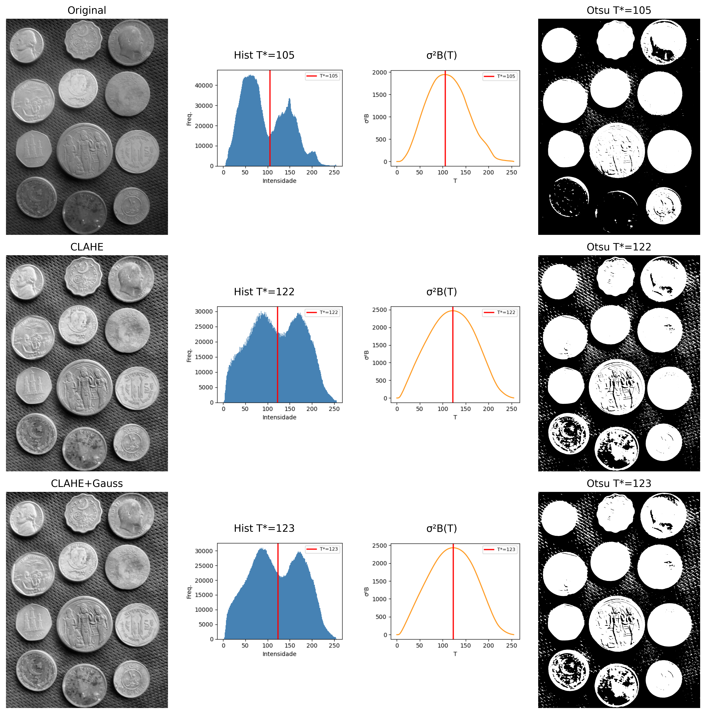
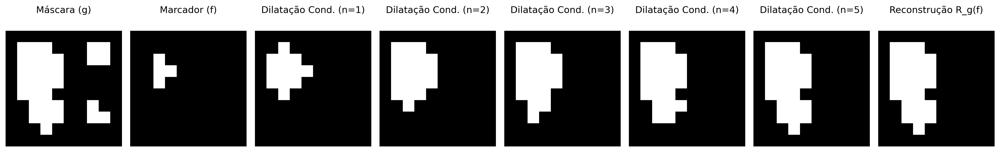
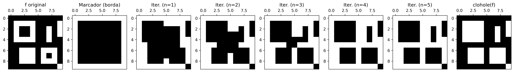
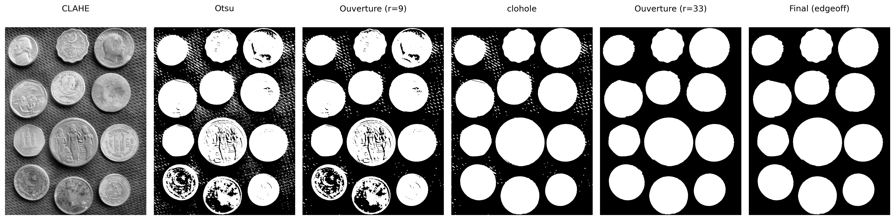
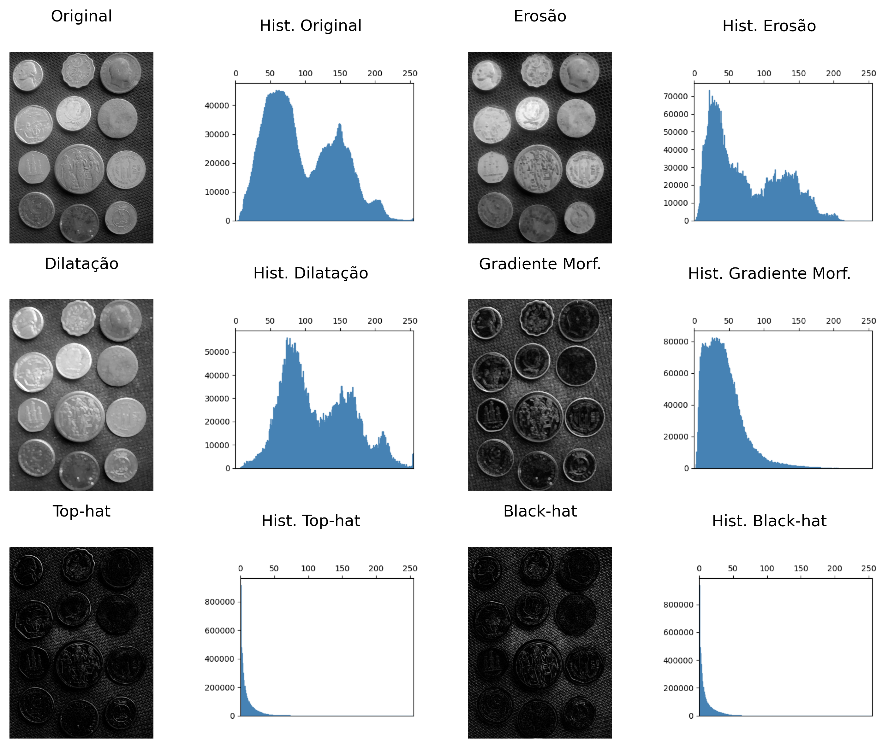
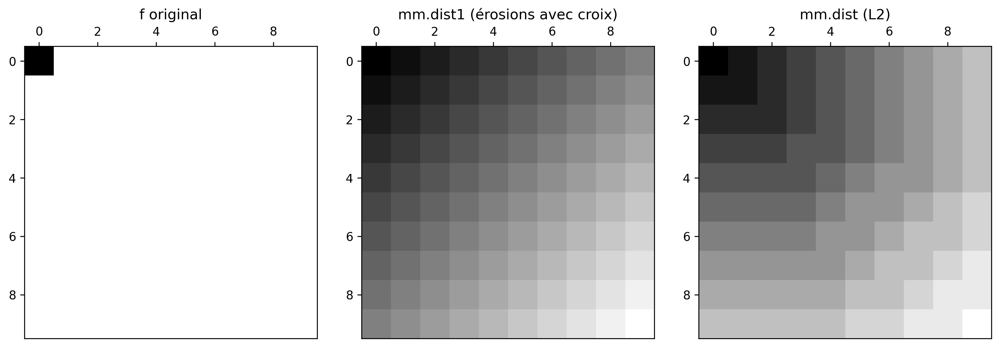
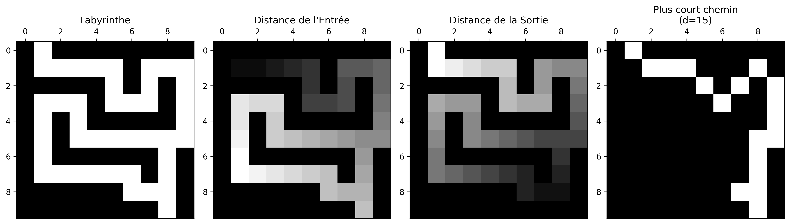
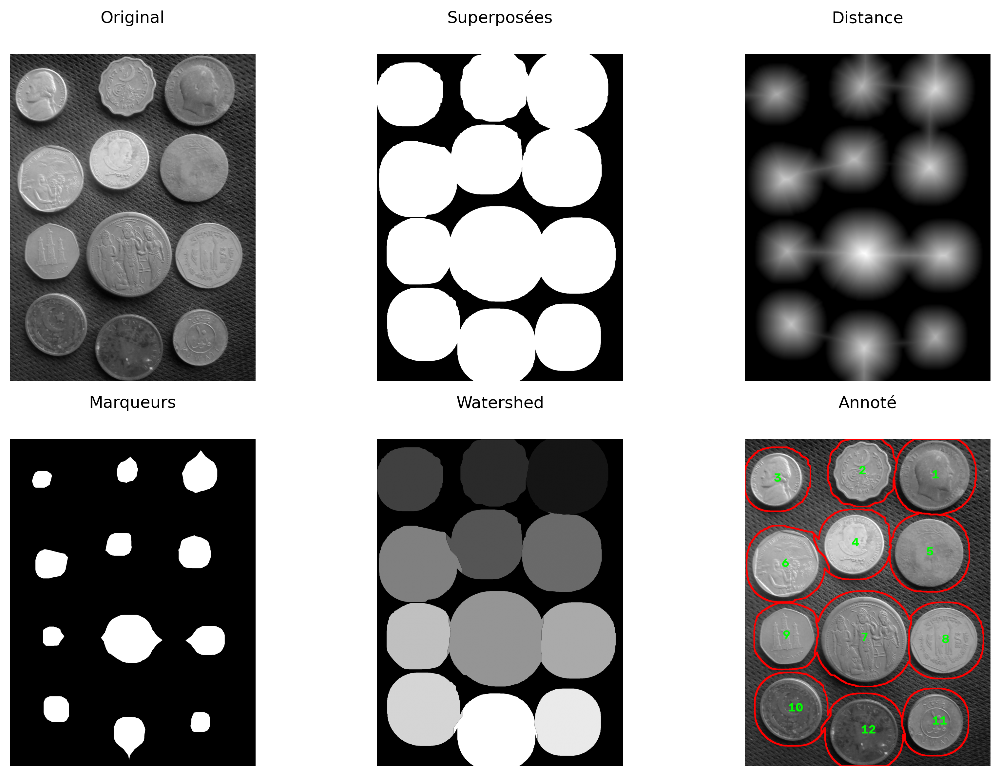

4Morphologie mathématique et segmentation d’images
Ce chapitre présente deux thèmes fondamentaux du traitement numérique des images (TNI) : la morphologie mathématique et la segmentation d’images. La morphologie mathématique fournit un cadre théorique fondé sur la théorie des ensembles pour analyser, affiner et quantifier la forme des objets dans les images binaires et en niveaux de gris, au moyen d’opérateurs fondamentaux tels que l’érosion et la dilatation. La segmentation, quant à elle, vise à partitionner l’image en régions d’intérêt, en séparant les objets du fond et en produisant des représentations adaptées à l’analyse et à l’interprétation.
Le chapitre débute par le seuillage, l’une des techniques de segmentation les plus importantes, en introduisant la méthode automatique d’Otsu et en revisit l’analyse des histogrammes au moyen de la variance interclasses, présentée au chapitre 1. Ensuite, sont étudiés les principaux opérateurs de la morphologie mathématique, notamment l’érosion, la dilatation, l’ouverture, la fermeture et la reconstruction morphologique, qui permettent d’affiner les masques binaires et de préserver les structures pertinentes des objets. Enfin, sont présentées des techniques de segmentation fondée sur les régions, telles que l’étiquetage des composantes connexes, la transformée de distance et l’algorithme watershed basé sur les marqueurs, aboutissant à l’extraction de descripteurs géométriques et à la génération de bounding boxes compatibles avec les systèmes modernes de détection d’objets.
4.1 Objectifs
À la fin de ce chapitre, vous serez en mesure de :
Appliquer la seuillage : Comprendre le critère automatique d’Otsu par maximisation de la variance interclasses (\(\sigma_B^2\)) et sélectionner des stratégies de prétraitement adaptées pour faciliter la segmentation ;
Maîtriser la morphologie binaire : Comprendre et appliquer l’érosion (\(A\ominus B\)) et la dilatation (\(A\oplus B\)) comme opérateurs fondamentaux, en dérivant l’ouverture (\(A\circ B\)), la fermeture (\(A\bullet B\)) et les opérations basées sur la reconstruction morphologique, comme mm.clohole et mm.edgeoff ;
Appliquer la morphologie en niveaux de gris : Utiliser le gradient morphologique et les filtres top-hat pour le rehaussement et l’analyse de structures locales ;
Étiqueter les composantes connexes : Identifier et séparer les régions connectées dans les images binaires au moyen d’algorithmes d’étiquetage ;
Appliquer la transformée de distance : Interpréter et calculer les distances au fond en utilisant des approches morphologiques et des métriques géométriques ;
Segmenter par régions : Construire des pipelines de segmentation basés sur des marqueurs en utilisant la transformée de distance et l’algorithme watershed ;
Extraire des descripteurs géométriques : Calculer des propriétés telles que l’aire, le périmètre, le centroïde, la circularité et les bounding boxes au moyen de cv2.connectedComponentsWithStats et cv2.findContours ;
Relier le TNI et la vision par ordinateur : Comprendre comment les descripteurs extraits par segmentation peuvent être convertis dans des formats utilisés par les détecteurs modernes, comme YOLO.
Le seuilletage (thresholding) est l’une des formes les plus simples et efficaces de segmentation d’images. Son objectif est de classer chaque pixel en deux classes d’intensité, généralement associées à objet et fond :
où \(f(x,y)\) représente l’intensité du pixel dans l’image originale et \(g(x,y)\) l’image binaire résultante.
Le choix du seuil \(T\) est important pour la qualité de la segmentation. La méthode d’Otsu détermine automatiquement le seuil optimal en maximisant la variance interclasses\(\sigma_B^2\) définie par :
\(w_0(T)\) et \(w_1(T)\) sont les probabilités cumulées des classes fond et objet ;
\(\mu_0(T)\) et \(\mu_1(T)\) sont les moyennes d’intensité de ces classes ;
\(\sigma_B^2(T)\) représente la variance interclasses pour un seuil donné \(T\).
La méthode fonctionne mieux lorsque l’histogramme présente deux groupes d’intensités relativement séparés. Pour cela, l’algorithme évalue tous les seuils possibles de l’image — typiquement dans l’intervalle \([0,255]\) pour des images 8 bits — et sélectionne la valeur qui maximise la variance entre classes, notée \(\sigma_B^2\) :
La méthode d’Otsu produit de meilleurs résultats lorsque l’histogramme présente deux pics bien définis (bimodalité), correspondant au fond et à l’objet. Plus la séparation entre ces pics est grande et plus le maximum de \(\sigma_B^2\) est prononcé, plus le seuil obtenu tend à être fiable.
Dans les images avec un éclairage non uniforme ou de multiples régions d’intensité, les techniques de seuilletage adaptatif — dans lesquelles le seuil est calculé localement — produisent généralement des segmentations plus robustes.
L’indice \(B\) dans \(\sigma_B^2\) signifie between classes (entre classes). Ainsi, \(\sigma_B^2\) représente la variance entre les classes (between-class variance).
4.2.1 Image de pièces de monnaie
L’image utilisée pour pratiquer la segmentation est une photographie d’une collection de pièces de monnaie de différents pays et époques (Figure 4.1). Crédit : GAZI.MD.AHAD (CC BY-SA 4.0). Elle présente des objets circulaires aux contours bien définis, ce qui la rend idéale pour illustrer le seuillage, les opérateurs morphologiques, la transformée de distance, le watershed et les descripteurs de forme.
Figure 4.1: Image avec des pièces de différents types. Crédit : GAZI.MD.AHAD (CC BY-SA 4.0).
4.2.2 Escolha do Pré-processamento para o Otsu
A qualidade do método de Otsu depende diretamente do quão bimodal é o histograma da imagem de entrada. A imagem original das moedas apresenta iluminação não uniforme e moedas escuras (cobre oxidado) com intensidades próximas às do fundo escuro, tornando o histograma pouco bimodal.
Para minimizar essas limitações, serão avaliadas duas técnicas clássicas de pré-processamento, apresentadas no capítulo anterior, aplicadas antes da etapa de limiarização. A Table 4.1 resume as características de cada abordagem. Essas técnicas buscam aumentar a separação entre objeto e fundo, tornando o histograma mais próximo de uma distribuição bimodal.
Table 4.1: Técnicas de pré-processamento avaliadas para melhorar a separação entre moedas e fundo antes da aplicação do método de Otsu.
Técnica
O que faz
Quando usar
CLAHE
Equalização de histograma adaptativa local
Baixo contraste global ou regional
Gaussiano
Suavização por convolução com gaussiana
Ruído de alta frequência (textura do fundo)
A função cv2.createCLAHE(clipLimit, tileGridSize) divide a imagem em blocos e aplica equalização de histograma em cada um deles, limitando a amplificação de ruído por meio do parâmetro clipLimit. Já o filtro Gaussiano (cv2.GaussianBlur) suaviza texturas finas que poderiam criar falsos picos no histograma.
Para comparar objetivamente qual pré-processamento produz a melhor entrada para o método de Otsu, serão apresentados, para cada versão da imagem, a própria imagem, o histograma com o limiar ótimo \(T^*\) destacado, a curva \(\sigma_B^2(T)\) e o resultado da binarização.
NoteCritério de comparação
A versão que apresentar o maior valor de \(\sigma_B^2\) em seu pico fornece a melhor separação entre as classes de fundo e objeto e, consequentemente, a melhor entrada para o método de Otsu (Figure 4.2).
import cv2, ioimport matplotlib.pyplot as pltdef otsu_criterio(img): h=mm.hist(img); p=h/h.sum();# histogramme et probabilités sigma2=np.zeros(len(p)) for T inrange(1,len(p)): # parcourt les seuils w0,w1=p[:T].sum(),p[T:].sum() # probabilités des classesif w0*w1==0: continue# évite la division par zéro mu0=(np.arange(T)*p[:T]).sum()/w0 # moyenne fond mu1=(np.arange(T,len(p))*p[T:]).sum()/w1 # moyenne objet sigma2[T]=w0*w1*(mu0-mu1)**2# σ²B(T)return sigma2,np.argmax(sigma2) # courbe et T optimaldef fig2img(fig): b=io.BytesIO(); fig.savefig(b,format='png',dpi=100) # figure → buffer plt.close(fig); b.seek(0)return np.array(plt.imread(b)) # buffer → arraydef plot_curve(y,T,title,ylabel,color): fig,ax=plt.subplots(figsize=(4,3)) ax.plot(y,color=color) if ylabel=="σ²B"else ax.bar(range(len(y)),y,color=color,width=1) ax.axvline(T,color='red',lw=2,label=f"T*={T}") # seuil optimal ax.set(xlabel="T"if ylabel=="σ²B"else"Intensidade",ylabel=ylabel) ax.legend(fontsize=8); plt.tight_layout()return fig2img(fig)# ── Pré-traitements ───────────────────────────────────────────────────────clahe=cv2.createCLAHE(clipLimit=2.0,tileGridSize=(8,8))img_clahe = clahe.apply(img_coins_gray)img_gauss = cv2.GaussianBlur(img_clahe,(5,5),0)imgs0=[("Original",img_coins_gray), ("CLAHE",img_clahe), ("CLAHE+Gauss",img_gauss)]# ── Tableau comparatif ───────────────────────────────────────────────────────print(f"{'Versão':<18}{'T*':>6}{'σ²B pico':>14}")print("-"*40)imgs,titles=[],[]for nome,img in imgs0: sigma2,T=otsu_criterio(img) # calcule σ²B(T)print(f"{nome:<18}{T:>6}{sigma2[T]:>14.4e}") imgs += [ img, # image plot_curve(mm.hist(img),T,f"Hist T*={T}","Freq.","steelblue"), plot_curve(sigma2,T,"σ²B(T)","σ²B","darkorange"), mm.threshold(img) # Otsu final ] titles += [nome,f"Hist T*={T}","σ²B(T)",f"Otsu T*={T}"]# ── Affichage final ───────────────────────────────────────────────────────────mm.show(imgs,titles=titles,cols=4,figsize=(12,12),dpi=200)
Versão T* σ²B pico
----------------------------------------
Original 105 1.9437e+03
CLAHE 122 2.4695e+03
CLAHE+Gauss 123 2.4283e+03

Figure 4.2: Comparaison des pré-traitements : image | histogramme+T* | σ²B(T) | Otsu. La meilleure séparation bimodale indique le seuil le plus fiable.
4.2.3 Résultat : CLAHE comme meilleur prétraitement
L’analyse de la Figure 4.2 indique que le CLAHE a obtenu la valeur la plus élevée de variance inter-classes (\(\sigma_B^2 \approx 2{,}47 \times 10^3\)), avec un seuil optimal \(T^* = 122\). Bien que la combinaison CLAHE+Gaussien ait produit un résultat très similaire (\(\sigma_B^2 \approx 2{,}43 \times 10^3\), \(T^* = 123\)), le critère quantitatif de la méthode d’Otsu favorise légèrement l’utilisation du CLAHE seul.
Sur le plan visuel, les images binarisées obtenues avec le CLAHE et le CLAHE+Gaussien sont pratiquement équivalentes. La différence entre les deux approches devient plus évidente dans l’analyse des histogrammes et des valeurs de \(\sigma_B^2(T)\) que dans l’inspection directe des segmentations résultantes. Ainsi, le choix du CLAHE repose principalement sur la maximisation de la séparation statistique entre les classes de fond et d’objet.
AstuceInterprétation des résultats
Remarquez que les prétraitements avec CLAHE et CLAHE+Gaussien produisent des histogrammes et des seuils optimaux très proches (\(T^*=122\) et \(T^*=123\)). Par conséquent, les images binarisées résultantes sont également très similaires. Dans ce cas, la décision ne repose pas sur des différences visuelles marquantes, mais sur le critère objectif de la méthode d’Otsu : la valeur la plus élevée de \(\sigma_B^2\) indique la meilleure séparation entre les classes.
4.3 Morphologie mathématique
La morphologie mathématique est une théorie basée sur les ensembles, utilisée pour analyser la forme et la structure des objets dans les images. Contrairement aux filtres linéaires présentés au chapitre 3, les opérateurs morphologiques sont non linéaires, car ils reposent sur des opérations de minimum, de maximum et d’inclusion spatiale, plutôt que sur des combinaisons linéaires d’intensités. Ces opérateurs agissent sur le voisinage de chaque pixel au moyen d’un élément structurant\(\mathbb{B}\), chargé de définir la forme et la taille de la région analysée.
Dans les images binaires et en niveaux de gris avec des éléments plans, l’élément structurant translaté à la position \(x\) est défini spatialement comme :
\[
\mathbb{B}_x = \{ x + b \mid b \in \mathbb{B} \}
\]
Dans les régions de bord de l’image, une partie de l’ensemble \(\mathbb{B}_x\) peut dépasser le domaine physique de la scène (\(\mathbb{E}\)). Pour garantir la cohérence mathématique des opérateurs primitifs à ces frontières, on suppose théoriquement que l’espace extérieur au domaine de l’image est rempli avec l’élément neutre de l’opération correspondante (infini positif pour l’érosion et infini négatif pour la dilatation), empêchant ainsi que l’environnement externe corrompe les structures internes de l’objet.
Lorsque l’élément structurant associe des poids à ses éléments — c’est-à-dire \(b: \mathbb{B} \to \mathbb{Z}\) — il est appelé fonction structurante ou élément structurant non plan.
Développée par Matheron et Serra dans les années 1960 pour les images binaires, puis étendue aux niveaux de gris, la morphologie mathématique fonde des opérateurs tels que le gradient morphologique, le top-hat, le watershed et la transformée de distance, tous dérivés de deux primitifs : l’érosion et la dilatation [Matheron (1975); Serra (1982)].
4.3.1 Érosion et Dilatation
Les deux opérateurs primitifs sont définis de manière unifiée pour les images en niveaux de gris (\(f: \mathbb{E} \to \mathbb{Z}\)) et, par restriction au domaine \(\{0,1\}\), également pour les images binaires.
4.3.1.1 Érosion
L’érosion d’une image \(f\) par un élément structurant \(b: \mathbb{B} \to \mathbb{Z}\) est définie formellement par :
En pratique, l’érosion remplace l’intensité du pixel \(x\) par la valeur minimale résultant de la différence entre l’image et l’élément structurant dans le voisinage défini par le domaine \(\mathbb{B}\). Des valeurs positives dans les poids de \(b(z)\) forcent le résultat local vers le bas, « creusant » plus profondément le relief de l’image et intensifiant l’érosion.
Dans le cas plat (où les poids sont nuls à l’intérieur du domaine, c’est-à-dire \(b \equiv 0\)), l’expression se simplifie en le minimum local pur :
Dans les images binaires, cette opération équivaut à exiger que l’ensemble \(\mathbb{B}\), translaté à la coordonnée \(x\), soit complètement contenu dans l’objet \(A\) :
\[
A \ominus \mathbb{B} = \{\, z \in \mathbb{E} \mid \mathbb{B}_z \subseteq A \,\}
\]
Effet visuel :Rétrécit les objets et les structures claires, éliminant les protubérances, les pics brillants ou les bruits qui sont géométriquement plus petits que le domaine \(\mathbb{B}\).
4.3.1.2 Implémentation de l’érosion
La version didactique mm.ero0 implémente le cas particulier de l’érosion avec élément structurant plat. Pour chaque pixel \((y,x)\), la fonction parcourt les voisins spatiaux autorisés par \(B\) et stocke la plus petite valeur trouvée dans l’image d’entrée \(f\), reproduisant directement l’opération de minimum local décrite dans la Équation 4.3 pour \(b \equiv 0\).
Notez que les valeurs des voisins sont toujours lues de manière statique à partir de l’image originale \(f\) ; la matrice de sortie \(g\) est utilisée exclusivement pour enregistrer le minimum accumulé du voisinage courant. Ainsi, le résultat final est invariant par rapport à l’ordre de balayage des pixels (que ce soit par lignes ou par colonnes).
La fonction auxiliaire _viz calcule les coordonnées des voisins valides à l’intérieur des limites physiques de l’image. Sur les bords, l’initialisation de l’accumulateur à 255 émule exactement le remplissage par élément neutre exigé par la théorie. La fonction d’interface mm.ero recourt quant à elle à l’implémentation native et optimisée d’OpenCV (cv2.erode) lorsque l’élément structurant est plat, basculant vers la routine générale mm.ero1 si l’élément possède des poids topographiques.
L’exemple informatique suivant illustre l’application d’un élément structurant en croix (mm.secross()) mis en évidence dans la Figure 4.3, en comparant l’exécution de la variante didactique en boucle (mm.ero0) avec le moteur de calcul d’OpenCV (mm.ero).
La fonction _viz utilise yield pour générer chaque voisin à la demande, sans stocker tous les résultats en mémoire dans une liste. Dans l’expérience ci-dessous, une fenêtre de 3000×3000 produit 9 millions de voisins. L’implémentation basée sur une liste a consommé plus de 1 Go de RAM et a pris environ 46 s, tandis que la version avec yield a consommé une mémoire négligeable et s’est exécutée en 38 s. En traitement d’images, les générateurs sont particulièrement utiles pour parcourir de grandes voisinages de manière efficace.
import tracemallocdef lista(n): return [(i, i) for i inrange(n)]def gera(n):for i inrange(n): yield i, ifor nome, f in [("LISTA", lista), ("YIELD", gera)]: tracemalloc.start()sum(x+y for x,y in f(9_000_000)) _, pico = tracemalloc.get_traced_memory() tracemalloc.stop()print(f"{nome} : {pico/1024/1024:.1f} Mo ")
LISTA : 830.8 Mo
YIELD : 0.0 Mo
4.3.1.3 Dilatation
La Dilatation d’une image \(f\) par une fonction structurante \(b: \mathbb{B} \to \mathbb{Z}\) est définie formellement par :
En pratique, la dilatation remplace l’intensité du pixel \(x\) par la plus grande valeur résultant de la somme entre l’image et l’élément structurant dans le voisinage défini. L’argument d’inversion spatiale (\(x - z\)) indique que la dilatation évalue implicitement l’élément transposé (réfléchi) \(\hat{b}\), propriété fondamentale pour assurer la dualité mathématique par rapport à l’érosion.
Dans le cas plat (où les poids sont nuls à l’intérieur du domaine, c’est-à-dire \(b \equiv 0\)), l’expression se réduit au maximum local pur :
Dans les images binaires, cette opération équivaut à exiger que l’ensemble réfléchi \(\hat{\mathbb{B}}\), translaté à la coordonnée \(x\), possède une intersection non vide avec l’objet \(A\) :
\[
A \oplus \mathbb{B} = \{\, z \in \mathbb{E} \mid \hat{\mathbb{B}}_z \cap A \neq \varnothing \,\}
\]
Effet visuel :Étend les structures claires de l’image, augmente le remplissage des objets, connecte les composantes proches et élimine les canaux, fosses sombres ou vallées qui sont géométriquement plus petits que le domaine \(\mathbb{B}\).
4.3.1.4 Implémentation de la dilatation
La version didactique mm.dil0 implémente le cas particulier de dilatation avec élément structurant plan. Pour chaque pixel \((y,x)\), la fonction parcourt les voisins spatiaux autorisés par \(B\) et stocke la plus grande valeur trouvée dans l’image d’entrée \(f\), reproduisant directement l’opération de maximum local pour \(b \equiv 0\).
Avant de lancer le balayage spatial, l’élément structurant subit une réflexion géométrique au moyen de l’instruction np.flip(Bc) afin de construire explicitement la matrice transposée \(\hat{B}\) exigée par la théorie. Pour des masques parfaitement symétriques (tels que des croix, des carrés et des disques centrés à l’origine), cette réflexion ne modifie pas l’arrangement des pixels ; toutefois, pour les éléments asymétriques, cette étape est strictement nécessaire afin de garantir l’équivalence avec les définitions formelles et de préserver les lois de dualité.
Comme constaté pour l’opérateur d’érosion, les valeurs des voisins sont toujours lues de manière statique à partir de la matrice originale \(f\), tandis que la matrice de sortie \(g\) agit uniquement comme le registre du maximum accumulé du voisinage. Aux frontières de l’image, l’initialisation de l’accumulateur à 0 émule avec exactitude le remplissage externe par élément neutre (\(-\infty\), ou zéro dans les représentations sur 8 bits), garantissant que les bords physiques de la scène soient dilatés en parfaite conformité avec le standard adopté par OpenCV.
L’exemple informatique ci-dessous illustre l’application pratique d’un élément en croix (mm.secross()), validant la cohérence entre la logique en boucles (mm.dil0) et la méthode native industrielle (mm.dil).
def dil(f, Bc=np.zeros((3,3),dtype='uint8')):"""Dilatation (OpenCV ou avec des poids)."""try: return cv2.dilate(f, Bc)except: return mm.dil1(f, Bc)def dil0(f, Bc=np.zeros((3,3),dtype='uint8')):"""Dilatation plane suivant rigoureusement la théorie.""" g = np.empty_like(f) Bc = np.flip(Bc) # réflexion explicite : B̂for y inrange(f.shape[0]):for x inrange(f.shape[1]): g[y,x] =0# Initialise avec la valeur minimale pour chercher le maximumfor vy,vx,bv in mm._viz(f,Bc,y,x):if bv and g[y,x] < f[vy,vx]: g[y,x] = f[vy,vx]return g# Script de test et de validationB = mm.secross()print("Élément structurant B :")print(mm.drawImage(B))f = mm.randomImage(5,5)print("Image originale f :")print(mm.drawImage(f))print("Dilatation plane didactique (dil0) :")print(mm.drawImage(dil0(f, B)))print("Dilatation optimisée OpenCV (dil) :")print(mm.drawImage(dil(f, B)))
NoteNote : Le Confront des Signes (\(f(x+z)\) vs \(f(x-z)\))
Comparez les définitions formelles de l’érosion (Équation 4.3) et de la dilatation (Équation 4.4). Considérez un élément structurant asymétrique à droite \(\mathbb{B}=\{0,1\}\) (origine et un pixel à droite) appliqué à la position \(x=10\).
En raison du signe négatif (\(-z\)), avancer dans l’élément structurant correspond à reculer dans l’image, ce qui fait que la dilatation consulte le pixel à gauche (\(9\)).
La fonction _viz, utilisée dans morph.py, génère des voisins par déplacements additifs de la forme \(x+z\). Pour cette raison, l’implémentation de mm.dil0 reflète au préalable l’élément structurant au moyen de np.flip(B). Après la réflexion, le balayage basé sur \(x+z\) accède alors exactement aux mêmes points définis par l’expression théorique \(f(x-z)\) de la dilatation dans Équation 4.4.
Pour les éléments structurants symétriques (comme les disques, les carrés et les croix centrées), la réflexion ne modifie pas le masque. En revanche, pour les éléments asymétriques, cette étape est indispensable pour que l’implémentation reproduise correctement la définition mathématique de la dilatation et préserve la dualité érosion–dilatation.
NoteDualité érosion–dilatation
L’érosion et la dilatation sont duales par complémentation. Cela signifie qu’un opérateur peut être entièrement obtenu à partir de l’autre, à condition d’agir sur le complément de l’image en utilisant l’élément structurant réfléchi \(\hat{B}\) :
\[
(A \ominus B)^c = A^c \oplus \hat{B} \quad \Longleftrightarrow \quad A \ominus B = (A^c \oplus \hat{B})^c
\]
De manière analogue, la dilatation peut également être obtenue à partir de l’érosion :
\[
(A \oplus B)^c = A^c \ominus \hat{B} \quad \Longleftrightarrow \quad A \oplus B = (A^c \ominus \hat{B})^c
\]
En termes pratiques, l’érosion d’un objet peut être obtenue par la dilatation de son complément, suivie de la complémentation du résultat (et vice-versa). Dans l’implémentation du paquet morph.py, les versions didactiques mm.ero0 et mm.dil0 rendent explicite cette structure au moyen de boucles (loops), tandis que mm.ero et mm.dil délèguent les opérations à OpenCV pour une plus grande efficacité computationnelle.
NoteConditions aux limites et images finies
En morphologie mathématique classique, définie sur un domaine infini (typiquement \(\mathbb{Z}^2\)), cette dualité est exacte. Dans les images numériques, cependant, on travaille avec des matrices finies, et le résultat dépend de la manière dont sont traités les pixels situés hors de l’image.
Pour que les identités de dualité restent valides, le complément doit être défini par rapport au même univers et les conditions aux limites adoptées pour l’érosion et pour la dilatation doivent être complémentaires entre elles. Par exemple, si l’érosion suppose que les pixels externes appartiennent à l’objet (\(255\)), alors la dilatation appliquée au complément doit supposer que ces mêmes pixels externes appartiennent au fond (\(0\)).
Lorsque différentes stratégies de remplissage sont utilisées (réplication, réflexion, valeur constante, etc.), la dualité théorique peut cesser d’être satisfaite exactement dans les régions proches des bords de l’image.
Pour illustrer numériquement les opérateurs morphologiques et la dualité érosion–dilatation, la Figure 4.4 présente une image binaire 10×10 traitée avec un élément structurant en forme de « L ». Dans l’implémentation de morph.py, l’origine de \(B\) est fixée au centre géométrique du masque — position \((1,1)\) pour un kernel 3×3 — et doit correspondre à un élément actif pour que l’érosion se comporte correctement (comme discuté précédemment). L’élément structurant \(B_L\) défini ci-dessous satisfait cette condition. La Figure 4.5 complète l’analyse avec un simulateur interactif de l’érosion, permettant de visualiser le déplacement de l’élément structurant sur l’image et d’identifier les positions où il reste complètement contenu dans l’objet.
A = np.array([ [0,0,0,0,0,0,0,0,0,0], [0,0,0,1,1,1,0,0,0,0], [0,0,1,1,1,1,1,0,0,0], [0,1,1,1,1,1,1,1,0,0], [0,1,1,1,1,1,1,1,0,0], [0,1,1,1,1,1,1,0,0,0], [0,0,1,1,1,1,1,1,0,0], [0,0,0,1,1,1,1,0,0,0], [0,0,0,0,1,0,0,0,0,0], [0,0,0,0,0,0,0,0,0,0]], dtype=np.uint8) *255B_L = np.array([[1,0,0], [1,1,0], [1,1,0]], dtype=np.uint8) # origine au centre (1,1), élément actif# Élément structurant réfléchi B̂B_hat = np.flip(B_L)print("Élément structurant B_L :")print(mm.drawImg(B_L))print("Élément structurant réfléchi B̂ :")print(mm.drawImg(B_hat)) # Érosion de A par B_Limg_ero0 = mm.ero0(A, B_L)# Validation de la dualité : (A ⊖ B)^c = A^c ⊕ B̂A_c =255- A # complément de Aero_c =255- img_ero0 # complément de l’érosion — côté gauchedil_Ac = mm.dil0(A_c, B_hat) # côté droitdualidade_ok = np.array_equal(ero_c, dil_Ac)print(f"Dualité (A ⊖ B)^c == A^c ⊕ B̂ : {dualidade_ok}")# Transposé (réflexion sur les deux axes) : B̂ utilisé dans la dilatation de la dualitéB_hat = np.flip(B_L)mm.show( [A, A_c, img_ero0, ero_c, dil_Ac], titles=["A", "Aᶜ", "A ⊖ B", "(A ⊖ B)ᶜ", "Aᶜ ⊕ B̂"], cols=5, figsize=(15, 3))
Figure 4.4: Érosion et dilatation sur une image binaire 10×10 avec un élément structurant « L » asymétrique 3×3. Validation de la dualité érosion–dilatation.
Cliquez sur une cellule du canevas pour déplacer le noyau B_L ou utilisez les curseurs pour tester l'inclusion des contenus.
Position X (col)
4
Position Y (ligne)
4
Pixel Érosion
255
🖱️ Cliquez sur une cellule pour déplacer le noyau B_L
🟢
Succès : contenu !
Le pixel reçoit 1 (255) dans l'image érodée.
Contrôles de coordonnées
4
4
Noyau B_L (3×3)
1
0
0
1
★
0
1
1
0
Figure 4.5: Simulateur : Érosion Morphologique (A ⊖ B_L)
4.3.2 Ouverture et Fermeture
En combinant l’érosion et la dilatation, on obtient deux opérateurs d’une grande utilité pratique : l’ouverture et la fermeture, définis par les Équations Équation 4.5 et Équation 4.6.. Leurs principaux effets sont résumés dans la Table 4.2..
Ouverture (opening) — érosion suivie d’une dilatation par le même \(B\) :
\[
A \circ B = (A \ominus B) \oplus B
\tag{4.5}\]
Fermeture (closing) — dilatation suivie d’une érosion par le même \(B\) :
\[
A \bullet B = (A \oplus B) \ominus B
\tag{4.6}\]
En pratique, OpenCV applique le même élément structurant lors des deux étapes. Pour les éléments structurants symétriques (les plus courants), cette implémentation coïncide avec la définition mathématique présentée ci-dessus.
Table 4.2: Propriétés de l’ouverture et de la fermeture.
Opérateur
Séquence
Effet principal
Ouverture \(A \circ B\)
érosion → dilatation
Supprime les structures incapables de contenir l’élément structurant ; lisse les contours externes
Fermeture \(A \bullet B\)
dilatation → érosion
Comble les trous plus petits que \(B\) ; lisse les contours internes
Propriété importante : les deux sont idempotents. Par exemple,
\[
(A \circ B) \circ B = A \circ B,
\]
c’est-à-dire qu’après la première application, de nouvelles applications du même opérateur ne modifient plus le résultat.
4.3.2.1 Implémentation de l’ouverture et de la fermeture
Contrairement à l’érosion et à la dilatation, l’ouverture et la fermeture n’introduisent pas de nouveaux mécanismes computationnels. Toutes deux sont obtenues par la composition séquentielle des opérateurs primitifs déjà présentés :
La fonction mm.open délègue l’opération à cv2.morphologyEx(..., MORPH_OPEN, B), tandis que mm.close utilise cv2.morphologyEx(..., MORPH_CLOSE, B), produisant le même résultat de manière plus efficace.
L’ouverture hérite de l’érosion la capacité de supprimer les structures plus petites que l’élément structurant et de la dilatation la restauration partielle des régions préservées. La fermeture réalise le processus inverse : elle étend d’abord les objets puis restaure leurs dimensions originales, comblant les lacunes et les trous plus petits que l’élément structurant.
4.3.2.2 Filtre Séquentiel Alterné
En pratique, l’ouverture et la fermeture sont souvent appliquées en séquence pour éliminer simultanément le bruit externe et remplir les trous internes. La fonction mm.asf (filtre séquentiel alterné) généralise cette stratégie en appliquant des ouvertures et des fermetures en alternance avec des éléments structurants progressivement plus grands. Les séquences disponibles sont présentées dans la Table 4.3.
Table 4.3: Séquences du filtre séquentiel alterné mm.asf.
Séquence
Ordre
Utilisation typique
'OC'
ouverture → fermeture
élimine le bruit externe avant de remplir les petits trous
'CO'
fermeture → ouverture
remplit les petits trous avant d’éliminer le bruit externe
'OCO'
ouverture → fermeture → ouverture
accentue l’élimination du bruit externe
'COC'
fermeture → ouverture → fermeture
accentue le remplissage des trous et des lacunes
Le paramètre n contrôle le nombre d’échelles utilisées par le filtre. À chaque itération \(i\), l’élément structurant est agrandi par somme de Minkowski (mm.sesum(b, i)), produisant une séquence de filtres morphologiques de plus en plus englobants. Contrairement à une seule ouverture ou fermeture avec un grand élément structurant, l’ASF effectue un lissage progressif à plusieurs échelles, préservant mieux la géométrie des objets pertinents tout en éliminant les structures plus petites. La Figure 4.6 présente un exemple d’application de l’ouverture, de la fermeture et de l’ASF sur l’image des pièces de monnaie.
Figure 4.6: Ouverture, fermeture, composition et filtre séquentiel alterné appliqués à la binarisation d’Otsu des pièces avec CLAHE. Élément structurant : disque 13×13.
4.3.3 Opérateurs Géodésiques
Les opérateurs géodésiques introduisent une contrainte supplémentaire aux opérateurs morphologiques classiques au moyen d’une image de contrôle appelée masque\(g\). Au lieu de permettre à l’érosion ou à la dilatation de se propager librement à travers l’image, le résultat de chaque itération est limité point par point par les valeurs du masque, restreignant l’évolution de l’opération aux régions autorisées.
4.3.3.1 Dilatation Géodésique
La dilatation géodésique d’une image marqueur \(f\) sous une image masque \(g\), à l’aide d’un élément structurant plat \(b\), est définie par :
\[
f \oplus_g b = (f \oplus b) \wedge g,
\tag{4.7}\]
où \(\wedge\) représente le minimum point par point.
En d’autres termes, on effectue d’abord une dilatation conventionnelle sur le marqueur, puis le résultat est restreint par le masque \(g\). Ainsi, la propagation ne peut jamais dépasser les régions autorisées par le masque.
La formulation classique de la dilatation géodésique suppose que le marqueur est contenu dans le masque, c’est-à-dire \(f \le g\), garantissant que l’évolution de l’opération reste toujours limitée par le masque.
4.3.3.2 Implémentation de la dilatation géodésique
La fonction mm.cdil implémente directement cet opérateur et permet d’exécuter plusieurs itérations consécutives :
def cdil(f, g, b=np.zeros((3,3),dtype='uint8'), n=1):"""Dilatação geodésica do marcador f sob a máscara g.""" y = f.copy()for _ inrange(n): y = np.minimum(cv2.dilate(y, b), g)return y
L’instruction np.minimum(cv2.dilate(y, b), g) implémente exactement la définition mathématique de la dilatation géodésique, c’est-à-dire \((y \oplus b)\wedge g\).
Lorsque \(n=1\), la fonction exécute une seule dilatation géodésique. Pour \(n>1\), le résultat de chaque étape devient le marqueur de l’étape suivante, produisant une propagation progressive contrôlée par le masque.
Le simulateur interactif Figure 4.7 permet de suivre, étape par étape, la propagation du marqueur \(f\) le long des couloirs du labyrinthe. À chaque itération de mm.cdil, le front de dilatation avance vers les cellules voisines libres — celles où \(g = 1\) —, tandis que les murs (\(g = 0\)) restent infranchissables. Le nombre de pas nécessaires pour que le marqueur atteigne la sortie correspond exactement à la longueur géodésique du chemin le plus court à l’intérieur du masque, mettant en évidence la connexion directe entre la dilatation géodésique itérée et la notion de distance dans les graphes.
🗺️ Simulateur : Dilatation géodésique dans le labyrintheδ_g^(n)(f)
Mur
Chemin libre (g)
Marqueur f
Propagation
Sortie
Étape 0 — marqueur initial f (entrée)
Figure 4.7: Simulateur interactif de dilatation géodésique : le marqueur f (vert) se propage pas à pas le long des chemins libres du masque g, sans traverser les murs.
4.3.3.3 Érosion géodésique
De manière duale, l’érosion géodésique d’une image marqueur \(f\) sous une image masque \(g\) est définie par :
\[
f \ominus_g b = (f \ominus b) \vee g,
\tag{4.8}\]
où \(\vee\) représente l’opérateur de maximum point à point.
Dans ce cas, l’érosion conventionnelle du marqueur est suivie d’une contrainte inférieure imposée par le masque. Ainsi, aucun pixel du résultat ne peut prendre une valeur inférieure au pixel correspondant du masque.
La formulation classique de l’érosion géodésique présuppose la condition duale
\[
f \ge g,
\]
de sorte que le masque agisse comme borne inférieure pendant tout le processus.
4.3.3.4 Implémentation de l’érosion géodésique
La fonction statique mm.cero matérialise cet opérateur :
staticmethoddef cero(f, g, b=np.zeros((3,3),dtype='uint8'), n=1):"""Érosion géodésique du marqueur f sous le masque g.""" y = f.copy()for _ inrange(n): y = np.maximum(cv2.erode(y, b), g)return y
Tout comme pour la dilatation géodésique, le paramètre \(n\) définit combien d’érosions géodésiques successives seront calculées avant de retourner l’image finale.
NoteRelation avec la reconstruction morphologique
La reconstruction morphologique présentée dans la section suivante est obtenue par l’application itérative de la dilatation géodésique (mm.cdil) jusqu’à ce qu’un point fixe soit atteint, c’est-à-dire jusqu’à ce qu’aucune cellule ne change de valeur entre deux itérations consécutives. En d’autres termes, la reconstruction consiste en une séquence de dilatations géodésiques successives qui se propagent à l’intérieur du masque jusqu’à ce qu’il n’y ait plus de modifications.
De manière duale, il est également possible de définir des reconstructions basées sur l’érosion géodésique au moyen d’applications successives de mm.cero.
4.3.3.5 Exemple : propagation dans un labyrinthe via dualité
La Figure 4.8 illustre la résolution du problème de connectivité d’un labyrinthe en utilisant la dualité morphologique au moyen des fonctions mm.cero et mm.suprec.
Au lieu de propager un marqueur à travers les couloirs libres par des dilatations géodésiques, le problème est formulé dans le domaine complémentaire. Initialement, le masque original est inversé,
\[
g = 1 - g_{orig},
\]
ce qui fait que les murs prennent la valeur 1 et les couloirs la valeur 0. De manière analogue, le marqueur est construit dans ce même domaine complémentaire, contenant une unique valeur 0 à la position de l’entrée du labyrinthe et la valeur 1 sur les autres pixels.
En utilisant l’élément structurant en croix (mm.secross()), l’érosion géodésique agit sur le marqueur complémenté. À chaque itération de mm.cero, la région connectée au marqueur initial subit des érosions successives, tandis que le masque impose une borne inférieure qui empêche la propagation à travers les murs du labyrinthe.
Les images intermédiaires montrent des états de l’évolution après différents nombres d’itérations (n=5, n=12, et n=22). Le résultat final est obtenu par la reconstruction géodésique par érosion (mm.suprec), qui applique des érosions géodésiques successives jusqu’à atteindre un point fixe, c’est-à-dire une situation où aucune modification supplémentaire ne se produit entre deux itérations consécutives.
Dans le domaine complémentaire, la région reconstruite correspond exactement à l’ensemble des couloirs connectés à l’entrée du labyrinthe. Ainsi, la connectivité entre l’entrée et la sortie peut être déterminée directement à partir de l’image reconstruite.
import numpy as npimport matplotlib.pyplot as pltimport matplotlib.colors as mcolors# 1. Masque original g (0 = Mur, 1 = Couloir)g_orig = np.array([ [0, 1, 0, 0, 0, 0, 0, 0, 0, 0], [0, 1, 1, 1, 1, 1, 0, 1, 1, 1], [0, 0, 0, 0, 0, 1, 0, 1, 0, 1], [0, 1, 1, 1, 0, 1, 1, 1, 0, 1], [0, 1, 0, 1, 0, 0, 0, 0, 0, 1], [0, 1, 0, 1, 1, 1, 1, 1, 1, 1], [0, 1, 0, 0, 0, 0, 0, 0, 1, 0], [0, 1, 1, 1, 1, 1, 1, 0, 1, 0], [0, 0, 0, 0, 0, 0, 1, 1, 1, 0], [0, 0, 0, 0, 0, 0, 0, 0, 1, 0]], dtype=np.uint8)# Inversion globale au début (Dualité Morphologique)g =1- g_orig # Maintenant : 1 = Mur, 0 = Couloirf = np.ones((10, 10), dtype=np.uint8)f[0, 1] =0# Graine injectée comme 0 dans le couloir# Élément structurant en croixB_cruz = mm.secross()# Traitement direct via mm.cero et mm.suprec dans le domaine inversépasso_5 = mm.cero(f, g, B_cruz, n=5)passo_12 = mm.cero(f, g, B_cruz, n=12)passo_22 = mm.cero(f, g, B_cruz, n=22)ponto_fixo = mm.suprec(f, g, B_cruz)# --- CONFIGURATION DE L'AFFICHAGE GRAPHIQUE ---titles = ["Máscara (~g)", "Marcador (~f)", "Avanço (n=5)", "Avanço (n=12)", "Avanço (n=22)", "~mm.suprec"]images = [g, f, passo_5, passo_12, passo_22, ponto_fixo]fig, axes = plt.subplots(1, 6, figsize=(16, 4), facecolor='#fcfcfc')# Carte de couleurs adaptée au domaine complémentaire :# Dans le domaine inversé : 1 = Mur (Bleu Foncé)# Où g == 0 et image == 1 = Couloir Libre (Gris Clair)# Où g == 0 et image == 0 = Onde Géodésique Active (Or)cmap_pipeline = mcolors.ListedColormap(['#ffc13b', '#e0e0e0', '#1e3d59'])for i, ax inenumerate(axes):if i ==0or i ==1:# Pour les conditions initiales (~g et ~f) cmap_init = mcolors.ListedColormap(['#e0e0e0', '#1e3d59']) ax.imshow(images[i], cmap=cmap_init, vmin=0, vmax=1)else:# Rendu basé sur les états complémentaires render_step = np.zeros_like(g, dtype=np.uint8) render_step[g ==1] =2# Mur (1 original de la carte de couleurs) render_step[g ==0] =1# Couloir par défaut render_step[images[i] ==0] =0# Onde active (0 original de la carte de couleurs) ax.imshow(render_step, cmap=cmap_pipeline, vmin=0, vmax=2) ax.set_title(titles[i], fontsize=10, fontweight='bold', color='#1e3d59', pad=12) ax.set_xticks(np.arange(-0.5, 10, 1), minor=True) ax.set_yticks(np.arange(-0.5, 10, 1), minor=True) ax.grid(which='minor', color='#ffffff', linestyle='-', linewidth=1) ax.tick_params(which='both', bottom=False, left=False, labelbottom=False, labelleft=False)# Indicateurs graphiques d'Entrée et de Sortie ax.plot(1, 0, marker='v', color='#2ecc71', markersize=7, markeredgewidth=1.5) ax.plot(8, 9, marker='o', color='#e74c3c', markersize=6, fillstyle='none', markeredgewidth=2)plt.tight_layout()plt.show()
Figure 4.8: Résolution de labyrinthe via Opérations Complémentaires : en inversant le masque et le marqueur au début du pipeline, le flux est résolu directement dans le domaine complémentaire via mm.cero et mm.suprec, éliminant les ré-inversions redondantes.
4.3.4 Reconstruction morphologique
La reconstruction morphologique propage une image marqueur\(f\) à l’intérieur d’une image masque\(g\), en garantissant que le résultat ne dépasse jamais les valeurs d’intensité imposées par le masque. L’opérateur fondamental qui rend possible cette propagation contenue est la dilatation géodésique, définie par la Équation 4.7.
La reconstruction est obtenue par l’application itérative de cette dilatation conditionnée. Initialement, le marqueur est limité par le masque pour établir l’état initial :
\[
X^{(0)} = f \wedge g,
\]
et les itérations suivantes sont définies de manière récursive par :
\[
X^{(k)} = (X^{(k-1)} \oplus b) \wedge g.
\]
La séquence croît de manière monotone jusqu’à atteindre un point fixe, produisant la reconstruction morphologique par dilatation (également connue dans la littérature sous le nom d’inf-reconstruction) :
La montée itérative est interrompue dès que la stabilité est atteinte, c’est-à-dire lorsque deux itérations consécutives produisent des matrices avec des valeurs absolument identiques.
4.3.4.1 Implémentation de la reconstruction morphologique
La routine didactique mm.infrec implémente directement l’algorithme itératif de point fixe. Initialement, le marqueur effectif initial \(X^{(0)}\) est déterminé par l’opération np.minimum(f, g). Pour garantir que la boucle de vérification exécute la première itération sans déclencher de fausses convergences prématurées, la variable de contrôle de l’itération précédente (y1) est initialisée avec une valeur sentinelle hors du domaine des données (ou simplement avec une matrice qui force la première exécution).
def infrec(f, g, b=np.zeros((3,3), dtype='uint8')):"""Inf-reconstruction : dilate le marqueur (f ∧ g) jusqu'à convergence sous le masque g.""" y = np.minimum(f, g)# Initialise y1 avec des valeurs impossibles pour forcer l'entrée dans la boucle y1 = np.full_like(f, 256, dtype=np.int16) whilenot np.array_equal(y, y1): y1 = y.copy()# Applique la dilatation géodésique : (y ⊕ b) ∧ g y = np.minimum(cv2.dilate(y, b), g)return y.astype('uint8')
À l’intérieur de la boucle while, la variable y stocke l’estimation courante de la reconstruction \(X^{(k)}\), tandis que y1 conserve l’image de l’étape immédiatement précédente \(X^{(k-1)}\). L’instruction de contrôle conditionnelle np.minimum(cv2.dilate(y, b), g) traduit fidèlement la dilatation géodésique théorique, où l’expansion morphologique conventionnelle pilotée par OpenCV est immédiatement « élaguée » et limitée par les barrières d’intensité du masque \(g\). La boucle cesse lorsqu’aucune modification de pixel n’est enregistrée entre les étapes.
4.3.4.2 Vantagens da reconstrução morfológica
A reconstrução morfológica é significativamente mais robusta que a abertura convencional porque é capaz de remover estruturas indesejadas sem distorcer ou alterar a morfologia dos objetos que devem ser preservados.
Enquanto a abertura clássica suaviza cantos, elimina pontas e deforma contornos devido à imposição geométrica rígida do elemento estruturante, a reconstrução geodésica utiliza a máscara para recuperar com exatidão os limites e formatos originais dos objetos que possuem conectividade com o marcador original.
Em termos intuitivos, o marcador atua como uma semente de contágio que se expande progressivamente, mas apenas trafegando pelas regiões permitidas pela máscara. Componentes que não possuem nenhuma intersecção com o marcador jamais serão reconstruídas (sendo eliminadas), enquanto as componentes tocadas pela semente expandem-se até restaurar integralmente a sua geometria original.
Esse comportamento discriminatório e conservativo é ilustrado na Figure 4.9, utilizando o elemento estruturante em cruz apresentado na Figure 4.3..
# 1. Définition du masque (g) : image 10x10 avec deux objets isolésg = np.array([ [0,0,0,0,0,0,0,0,0,0], [0,1,1,1,0,0,0,1,1,0], [0,1,1,1,1,0,0,1,1,0], [0,1,1,1,1,0,0,0,0,0], [0,1,1,1,1,0,0,0,0,0], [0,1,1,1,0,0,0,0,0,0], [0,0,1,1,1,0,0,1,0,0], [0,0,1,1,1,0,0,1,1,0], [0,0,0,1,0,0,0,0,0,0], [0,0,0,0,0,0,0,0,0,0]], dtype=np.uint8) *255B_cruz = mm.secross()# 2. Génération du marqueur (f)f = mm.ero(g, mm.sebox())# 3. Itérations de la dilatation conditionnée automatisées en boucleiteracoes = []titulos_iteracoes = []img_atual = f.copy()for i inrange(1, 6): img_add = img_atual*80 img_atual = mm.cdil(img_atual, g, B_cruz) iteracoes.append(img_add+img_atual) titulos_iteracoes.append(f"Dilatação Cond. (n={i})")# Reconstruction géodésique finale via la bibliothèque (point de contrôle)img_reconstruida = mm.infrec(f, g, B_cruz)# Vérification de convergence (l'étape 5 doit être identique à la reconstruction finale)convergencia_ok = np.array_equal(img_reconstruida, iteracoes[-1])print(f"✅ La reconstruction a atteint la stabilité à l'itération 5 : {convergencia_ok}")# 4. Affichage du pipeline évolutif (assemblage dynamique des listes)mm.show( [g, f] + iteracoes + [img_reconstruida], titles=["Máscara (g)", "Marcador (f)"] + titulos_iteracoes + ["Reconstrução Final R_g(f)"], cols=8, figsize=(18, 3))
✅ La reconstruction a atteint la stabilité à l'itération 5 : False

Figure 4.9: Pipeline de Reconstruction Morphologique par Dilatation Conditionnée : le masque contient deux objets, le marqueur isole uniquement le noyau de l’objet principal, et les itérations suivantes en boucle reconstruisent sa forme exacte jusqu’à la convergence.
4.3.5 Preenchimento de Buracos e Remoção de Bordas
Dois operadores baseados em reconstrução morfológica completam o pipeline de limpeza binária. Suas características principais são resumidas na Table 4.4.
Preenchimento de buracos (mm.clohole) remove cavidades completamente cercadas pelo objeto, independentemente do tamanho, sem alterar os contornos externos. O procedimento atua no complemento da imagem, utilizando como marcador uma restrição da moldura (frame) ao fundo:
Em termos operacionais, primeiro reconstrói-se o fundo externo e, em seguida, aplica-se a complementação para recuperar os objetos com buracos preenchidos.
Remoção de objetos de borda (mm.edgeoff) elimina todos os objetos que tocam a borda da imagem, preservando apenas os componentes totalmente internos. O marcador é obtido pela interseção entre a moldura (frame) e os objetos da imagem:
\[
\text{edgeoff}(f) = f \setminus R_f^\delta(\text{frame}(f) \wedge f)
\tag{4.11}\]
Table 4.4: Comparação entre os operadores clohole e edgeoff.
Operador
Marcador
Máscara
Efeito
mm.clohole
frame restrito ao fundo (\(f^c\))
\(f^c\)
Preenche buracos internos
mm.edgeoff
frame restrito ao objeto (\(f\))
\(f\)
Remove objetos conectados à borda
A evolução passo a passo dessas transformações geodésicas pode ser acompanhada nas figuras a seguir. A Figure 4.10 ilustra o mecanismo de inundação controlada do operador mm.clohole, no qual a reconstrução ocorre a partir do fundo externo e impede a propagação para regiões internas não conectadas ao exterior, resultando no preenchimento consistente das cavidades internas. Em contrapartida, a Figure 4.11 detalha a dinâmica do operador mm.edgeoff, em que apenas os componentes conectados à borda são reconstruídos e posteriormente removidos, preservando exclusivamente os objetos totalmente contidos no interior da imagem.
A conectividade da propagação geodésica é controlada pelo elemento estruturante: mm.sebox() (vizinhança de 8) inclui conexões diagonais, enquanto mm.secross() (vizinhança de 4) as exclui. Consequentemente, a escolha do elemento estruturante afeta quais componentes são alcançados pela reconstrução e, portanto, quais serão preservados ou removidos.
4.3.5.1 Conformité avec l’implémentation
Les définitions ci-dessus sont directement alignées avec l’implémentation dans morph.py, reproduite ci-dessous :
staticmethoddef clohole(f, b=np.ones((3,3),dtype='uint8')):# marqueur restreint au fond de l'image marqueur = mm.frame(f, border=1) & mm.neg(f)return mm.neg(mm.infrec(marqueur, mm.neg(f), b))staticmethoddef edgeoff(f, b=np.ones((3,3),dtype='uint8')):# marqueur restreint aux objets de l'image marqueur = mm.frame(f, border=1) & freturn mm.subm(f, mm.infrec(marqueur, f, b))
Ces implémentations rendent explicite le fait que les deux opérateurs sont des instances directes de la reconstruction morphologique par dilatation géodésique avec mm.infrec, ne différant que par le choix du marqueur et du masque : clohole agit sur le complément de l’image, tandis que edgeoff agit directement sur le domaine des objets.
# Fonction auxiliaire unifiée pour générer le pipeline itératif avec mise en évidence visuelledef gerar_pipeline_reconstrucao(marcador, mascara, kernel, passos=4, fator=80): iteracoes, titulos = [], [] img_atual = marcador.copy()for i inrange(1, passos +1): img_visual = img_atual * fator img_atual = mm.cdil(img_atual, mascara, kernel) iteracoes.append(img_visual + img_atual) titulos.append(f"Iter. (n={i})")return iteracoes, titulos# Image binaire 10x10 avec 3 scénarios : objet avec trou, objet isolé et objet sur le bordf = np.array([ [0,0,0,0,0,0,0,0,0,0], [0,1,1,1,1,0,0,0,0,1], [0,1,0,0,1,0,0,1,0,1], [0,1,0,0,1,0,0,1,0,1], [0,1,1,1,1,0,0,1,0,0], [0,0,0,0,0,0,0,0,0,0], [0,0,1,1,1,0,1,1,1,0], [0,0,1,1,1,0,1,0,1,0], [0,0,1,1,1,0,1,1,1,0], [0,0,0,0,0,0,0,0,0,1]], dtype=np.uint8) *255B_cruz = mm.secross()f_c = mm.neg(f) # Utilise l'opérateur de négation natif de mm# ── PIPELINE CLOHOLE ──────────────────────────────────────────────────────────# Le marqueur du clohole théorique est le bord externe marcador_ch = mm.frame(f, border=1) iters_ch, tits_ch = gerar_pipeline_reconstrucao(marcador_ch, f_c, B_cruz, passos=5)# Résultat final calculé en détail et validé avec la fonction native mm.cloholeimg_clohole = mm.neg(mm.infrec(marcador_ch, f_c, B_cruz))print(f"✅ Validation clohole : {np.array_equal(img_clohole, mm.clohole(f))}")mm.show( [f, marcador_ch] + iters_ch + [img_clohole], titles=["f original", "Marcador (Borda)"] + tits_ch + ["clohole(f)"], cols=8, figsize=(18, 3), axis=True)
✅ Validation clohole : True

Figure 4.10: Pipeline de remplissage de trous (clohole) : le marqueur est obtenu à partir du bord de l’image et restreint au complément \(f^c\). Les itérations de dilatation géodésique reconstruisent le fond externe ; après la complémentation finale, les trous internes sont remplis.
Figure 4.11: Pipeline de suppression des structures de bord (edgeoff) : le marqueur capture les racines connectées aux extrémités de la matrice, la reconstruction délimite l’étendue de ces éléments et la soustraction booléenne préserve uniquement les objets totalement internes.
4.3.6 Pipeline de Limpeza Binária com CLAHE
Com base na análise anterior — na qual o CLAHE produziu o maior valor da variância interclasses (\(\sigma_B^2 \approx 2{,}47 \times 10^3\)), ver Figure 4.2, e o operador mm.clohole mostrou-se eficaz no preenchimento das cavidades internas —, o pipeline final de segmentação, ilustrado na Figure 4.12, é estruturado pelo seguinte fluxo computacional:
Após a etapa de mm.clohole, aplica-se uma segunda abertura morfológica com um elemento estruturante maior (mm.sedisk(33), disco de diâmetro 33). Essa operação remove pequenas regiões residuais e artefatos que possam ter permanecido após a segmentação. Em particular, o preenchimento geodésico pode transformar pequenas cavidades isoladas em componentes conectados ao objeto, tornando conveniente uma etapa adicional de filtragem baseada em tamanho. O diâmetro foi escolhido de modo que as moedas permaneçam capazes de conter o elemento estruturante, enquanto componentes significativamente menores sejam eliminados.
Nesta imagem, nenhuma moeda está conectada à borda da matriz. Consequentemente, a aplicação de mm.edgeoff não altera o resultado obtido após a segunda abertura. Ainda assim, essa etapa é mantida no pipeline por robustez, pois em outras imagens podem existir objetos parcialmente visíveis ou conectados às bordas, que devem ser removidos antes da etapa de análise.
AstucePor que a abertura após o clohole?
O operador mm.clohole preenche todas as cavidades fechadas presentes nos objetos segmentados. Em algumas situações, pequenas regiões indesejadas podem permanecer após essa etapa ou tornar-se conectadas aos objetos principais. A abertura morfológica subsequente remove componentes menores que o elemento estruturante, preservando as moedas devido ao seu tamanho significativamente maior.
# ── Pré-traitement : uniquement CLAHEimg_clahe0 = cv2.createCLAHE(clipLimit=2.0, tileGridSize=(8, 8)).apply(img_coins_gray)# ── Étape 1 : Binarisation Otsuimg_bin = mm.threshold(img_clahe0)# ── Étape 2 : Ouverture — supprime les bruits blancs de fondimg_open = mm.open(img_bin, mm.sedisk(9))# ── Étape 3 : clohole — ferme tous les trous internesimg_hole = mm.clohole(img_open)# ── Étape 4 : Ouverture (grand noyau) — supprime les artefacts du cloholeimg_limpo = mm.open(img_hole, mm.sedisk(33))# ── Étape 5 : edgeoff — supprime les objets qui touchent le bordimg_final = mm.edgeoff(img_limpo, border=1)mm.show( [img_clahe0, img_bin, img_open, img_hole, img_limpo, img_final], titles=["CLAHE", "Otsu", "Ouverture (r=9)","clohole", "Ouverture (r=33)", "Final (edgeoff)"], cols=6, figsize=(18, 6))

Figure 4.12: Pipeline complet de segmentation avec CLAHE : Otsu → ouverture (r=9) → clohole → ouverture (r=33) → edgeoff.
4.3.7 Morphologie en niveaux de gris
Les opérateurs morphologiques s’étendent naturellement aux images en niveaux de gris. Dans cette formulation, l’érosion et la dilatation agissent directement sur les niveaux d’intensité de l’image. Pour des éléments structurants plats (\(b \equiv 0\)), l’érosion correspond au minimum local et la dilatation au maximum local dans le voisinage défini par l’élément structurant.
L’interprétation intuitive est simple : l’érosion assombrit les régions en remplaçant chaque pixel par la plus petite valeur présente dans son voisinage, tandis que la dilatation éclaircit les régions en utilisant la plus grande valeur disponible. La combinaison de ces opérateurs permet de construire des transformations capables de rehausser les contours, de supprimer les tendances d’éclairage et de mettre en évidence les structures locales.
Trois opérateurs dérivés sont particulièrement utiles :
Gradient morphologique — met en évidence les contours comme la différence entre la dilatation et l’érosion :
\[
\text{grad}_B(f) = (f \oplus B) - (f \ominus B)
\tag{4.12}\]
Top-hat — met en évidence les structures brillantes plus petites que l’élément structurant (différence entre l’image originale et son ouverture) :
\[
\text{top-hat}_B(f) = f - (f \circ B)
\tag{4.13}\]
Black-hat — met en évidence les structures sombres plus petites que l’élément structurant (différence entre la fermeture et l’image originale) :
\[
\text{black-hat}_B(f) = (f \bullet B) - f
\tag{4.14}\]
Le Top-hat extrait les détails brillants qui ne survivent pas à l’ouverture, tandis que le Black-hat révèle les détails sombres supprimés par la fermeture. Quant au gradient morphologique, il rehausse les transitions abruptes d’intensité, produisant une représentation similaire à celle d’un détecteur de contours.
Pour comprendre le mécanisme de ces opérateurs au niveau local, la Figure 4.13 présente un simulateur interactif de morphologie en tons de gris. Le simulateur permet de modifier librement l’élément structurant, de visualiser son déplacement sur l’image et de suivre simultanément le profil unidimensionnel des intensités. Ainsi, il devient possible d’observer directement comment l’érosion sélectionne les minima locaux, comment la dilatation sélectionne les maxima locaux et comment le gradient morphologique émerge de la différence entre ces deux opérateurs.
Le bouton situé dans le coin supérieur droit permet d’alterner entre la visualisation originale en tons de gris et une représentation en fausses couleurs (colormap) pour les trois types de gradients uniquement. La version colorée facilite la perception visuelle des variations d’intensité, rendant plus évidente l’action des opérateurs morphologiques sur les maxima, les minima et les transitions locales de l’image.
Les opérateurs présentés sont disponibles dans morph.py via les fonctions mm.gradm, mm.tophat et mm.blackhat.
🎛️ Simulateur avancé de morphologie mathématique
🖱️ Déplacez la souris pour mettre à jour le profil 1D de la ligne correspondante
X (col)
—
Y (ligne)
—
f(x,y)
—
valeur
—
Élément B (Cliquer pour modifier)
Ouverture (f∘B): dil(ero(f)) Fermeture (f•B): ero(dil(f)) Gradient: dil(f) − ero(f) Top-hat: f − (f∘B) Black-hat: (f•B) − f
Profil 1D de la ligne: Aucun (passez la souris sur l'image)
Figure 4.13: Simulateur interactif avancé de morphologie avec élément structurant modifiable et profil 1D.
La Figure 4.14 illustre les effets de ces opérateurs sur l’image des pièces et leurs histogrammes respectifs. On observe que l’érosion déplace la distribution vers des intensités plus faibles, tandis que la dilatation la déplace vers des intensités plus élevées. Le gradient concentre les valeurs dans les régions de contour, et les opérateurs Top-hat et Black-hat produisent des histogrammes fortement concentrés à de faibles niveaux d’intensité, car seules de petites structures locales sont mises en évidence.
import ioimport matplotlib.pyplot as pltimport numpy as npdef fig2img(fig): b = io.BytesIO(); fig.savefig(b, format='png', dpi=100); plt.close(fig); b.seek(0)return (plt.imread(b)[:, :, :3] *255).astype(np.uint8)def plot_hist(img, title): fig, ax = plt.subplots(figsize=(4, 3)) h = mm.hist(img)# CORRECTION : range utilise len(h) dynamiquement pour correspondre au retour de la bibliothèque ax.bar(range(len(h)), h, color='steelblue', width=1, edgecolor='steelblue') ax.set(xlim=(0, 255)); plt.tight_layout()return fig2img(fig)# 1. Traitement morphologique de baseB = mm.sedisk(19)operadores = [ ("Original", img_coins_gray), ("Erosão", mm.ero(img_coins_gray, B)), ("Dilatação", mm.dil(img_coins_gray, B)), ("Gradiente Morf.", mm.gradm(img_coins_gray, B)), ("Top-hat", mm.tophat(img_coins_gray, B)), ("Black-hat", mm.blackhat(img_coins_gray, B))]# 2. Assemblage dynamique de la paire : [Image, Histogramme]imgs, titles = [], []for nome, img in operadores: imgs += [img, plot_hist(img, f"Hist. {nome}")] titles += [nome, f"Hist. {nome}"]# 3. Affichage final en grille de deux colonnes (Image | Histogramme)mm.show(imgs, titles=titles, cols=4, figsize=(10, 8))

Figure 4.14: Morphologie en niveaux de gris et leurs histogrammes respectifs. L’érosion réduit les intensités locales, la dilatation les amplifie, le gradient met en évidence les bords, et les opérateurs Top-hat et Black-hat révèlent les détails locaux clairs et sombres. Élément structurant : disque de diamètre 19.
Les opérateurs morphologiques présentés précédemment seront désormais utilisés comme outils de raffinement et de génération de marqueurs pour des méthodes de segmentation plus avancées, présentées ci-après.
4.4 Segmentation d’Images : Fondements et Taxinomie
La segmentation d’images consiste à diviser l’image en régions associées à des objets ou à des structures d’intérêt. En TNI, elle représente la transition entre le traitement de bas niveau — comme le filtrage et le rehaussement — et des étapes d’analyse plus avancées, telles que l’extraction de caractéristiques, la reconnaissance et l’interprétation de la scène.
Formellement, l’objectif de la segmentation consiste à décomposer le domaine spatial complet d’une image, noté \(\Omega\), en une partition de sous-ensembles \(\{R_1, R_2, \ldots, R_n\}\) qui satisfait simultanément les critères de complétude et de disjonction :
Outre les propriétés de complétude et de disjonction exprimées dans la Équation 4.15, chaque sous-région \(R_i\) doit constituer un domaine homogène selon un prédicat de similarité défini sur des propriétés locales — intensité, couleur ou texture — et, simultanément, être distincte des régions adjacentes.
Les techniques de segmentation peuvent être organisées en différentes familles. Dans ce chapitre, l’accent sera mis sur les approches résumées dans la Table 4.5, fondées principalement sur des critères d’intensité, de connectivité et de proximité spatiale.
Table 4.5: Taxinomie simplifiée des principales approches de segmentation et d’affinement étudiées dans ce chapitre.
Approche
Critère de Segmentation
Opérateurs de Référence
Seuillage
Partitionnement de l’espace des intensités
Critère d’Otsu, seuillage global et local
Morphologie Mathématique
Relations spatiales définies par des éléments/fonctions structurants
Érosion, dilatation, ouverture, fermeture et reconstruction
Basée sur les Régions
Homogénéité locale et connectivité spatiale
Étiquetage des composantes connexes, Transformée de Distance et Watershed
Jusqu’à ce point, le développement pratique s’est concentré sur le seuillage, au moyen de la combinaison entre l’égalisation adaptative CLAHE et la méthode globale d’Otsu. Cette étape a été complétée par des opérateurs de reconstruction morphologique basés sur des dilatations géodésiques, implémentés par les fonctions mm.infrec, mm.clohole et mm.edgeoff, produisant un masque binaire propre et adapté à l’analyse.
Cependant, dans les scénarios où des objets distincts apparaissent connectés dans le masque binaire — que ce soit par contact physique, chevauchement partiel ou par de minces ponts de pixels produits par la segmentation —, le seuillage cesse d’être suffisant pour individualiser chaque objet. Dans ces cas, de multiples objets composent une seule composante connexe, ce qui complique les étapes ultérieures de mesure et d’interprétation.
Pour surmonter cette limitation, les prochaines sections introduisent trois outils complémentaires : l’Étiquetage des Composantes Connexes, la Transformée de Distance et l’algorithme de segmentation par Watershed basé sur des marqueurs. Ensemble, ces techniques permettent de séparer les objets adjacents, d’identifier les régions individuellement et d’extraire des descripteurs géométriques cohérents pour une analyse quantitative.
4.4.1 Étiquetage
L’étiquetage des composantes connexes (connected component labeling) est l’opérateur qui attribue un identifiant entier unique à chaque ensemble de pixels appartenant à la même composante connexe dans une image binaire.
NoteDéfinition formelle
Étant donné une image binaire \(f\) et une relation de connectivité définie par un élément structurant \(B\) (typiquement la connectivité-4 ou la connectivité-8), l’algorithme d’étiquetage de la Figure 4.15 produit une image \(g\) dans laquelle tous les pixels appartenant à la même composante connexe reçoivent le même étiquette entière positive, tandis que les pixels appartenant à des composantes distinctes reçoivent des étiquettes différentes.
La connectivité définit quels pixels sont considérés comme voisins directs d’un pixel \((x,y)\). Les définitions les plus utilisées sont :
Connectivité-4 : ne considère que les quatre voisins orthogonaux (nord, sud, est et ouest).
Connectivité-8 : considère les quatre voisins orthogonaux et les quatre voisins diagonaux, totalisant huit voisins.
Le choix de la connectivité influence directement la formation des composantes connexes et, par conséquent, le résultat de l’étiquetage, comme illustré dans la Figure 4.17. Un exemple supplémentaire peut être exploré de manière interactive dans le simulateur présenté dans la Figure 4.16.
L’implémentation dans morph.py met à disposition deux versions de cet opérateur. La fonction mm.label0 reproduit explicitement l’algorithme de flood-fill à l’aide d’une pile et permet de contrôler la connectivité via l’élément structurant adopté. Quant à mm.label, elle délègue l’opération à l’implémentation optimisée d’OpenCV (cv2.connectedComponents). Dans les deux cas, le résultat est une image étiquetée dans laquelle chaque composante connexe reçoit un identifiant entier distinct.
Algoritmo de rotulação por flood-fill com pilha — painel interativo com HTML e SVG
Passo a passo
Cards
Linha do tempo
Código Python
Fluxograma
Flood-fill com pilha
Rotulagem de componentes conexas
1
Criar imagem de saída g, inicializada com zeros, mesma dimensão de f.
2
Inicializar contador de rótulos (cor) cor ← 1.
3
Percorrer f em ordem raster (coordenadas x e y) até encontrar uma semente: pixel ativo (f[x,y] ≠ 0) ainda não rotulado (g[x,y] = 0).
4
Inserir a semente encontrada na pilha pilha ← [[x,y]].
5
Enquanto a pilha contiver coordenadas (while pilha):
Desempilhar pixel atual: i, j ← pilha.pop() e atribuir o rótulo: g[i,j] ← cor.
Buscar vizinhos usando o iterador mm._viz(f,b,i,j). Se o vizinho for ativo no elemento estruturante (bv ≠ 0), ativo na imagem (f[vy,vx] ≠ 0) e não rotulado (g[vy,vx] = 0), empilhá-lo.
6
Pilha vazia ⟹ Toda a componente conexa atual foi explorada e rotulada com sucesso.
7
Incrementar o rótulo para a próxima componente: cor ← cor + 1 e continuar a varredura raster.
A conectividade (4 ou 8 vizinhos) é definida unicamente pela matriz morfológica b passada como parâmetro, alterando os pixels retornados em mm._viz.
01
Inicialização
Criar matriz de rótulos g preenchida com zeros (fundo). Definir rótulo inicial cor ← 1.
02
Varredura Raster
Percorrer a matriz bidimensional linha por linha, localizando pixels pertencentes ao objeto que ainda não possuem rótulo.
03
Semente inicial
Ao achar um pixel válido, inicializar a estrutura LIFO de busca: pilha = [[x, y]].
04
Expansão por Flood-Fill
Enquanto houver elementos na pilha:
Extrair (i, j) via pop() e marcar g[i, j] = cor.
Inspecionar vizinhança geométrica e adicionar novos candidatos à pilha.
05
Próxima Componente
Pilha esvaziada ⟹ Incrementar indexador cor ← cor + 1 para diferenciar o próximo objeto isolado.
01
Alocação Espacial
g ← zeros_like(f) e definição do primeiro identificador: cor ← 1.
02
Varredura Bidimensional
Laços encadeados varrendo as dimensões h e w da imagem.
03
Descoberta de Objeto
Filtro condicional localiza pixel ativo não indexado e cria a pilha semente.
04–05
Preenchimento por Região (Flood-fill)
while pilha
Remover último da pilha (i,j) e aplicar rótulo atual.
Empilhar vizinhos conectados que atendam aos critérios morfológicos de b.
06
Fechamento do Objeto
Pilha vazia determina o fim do isolamento daquela componente.
07
Atualização do Rótulo
Incremento linear: cor ← cor + 1. A varredura raster continua do ponto onde parou.
label0.pyflood-fill com pilha
deflabel0(f, b=np.ones((3,3),dtype='uint8')):
"""Rotulagem por flood-fill com pilha."""
h, w = f.shape
g = np.zeros(f.shape, dtype=int)
cor = 1for x inrange(h):
for y inrange(w):
if f[x,y] and not g[x,y]:
pilha = [[x,y]]
while pilha:
i,j = pilha.pop(); g[i,j] = cor
for vy,vx,bv in mm._viz(f,b,i,j):
if bv and f[vy,vx] and not g[vy,vx]:
pilha.append([vy,vx])
cor += 1return g
1
g = np.zeros(f.shape, dtype=int) — Inicializa a matriz de saída com zeros. Zeros representam o fundo invariável.
2
mm._viz(f, b, i, j) — O iterador morfológico avalia a conectividade. Passando B_cruz a busca expande em 4-vizinhança; passando quadrado (ones) expande em 8-vizinhança.
3
pilha.pop() — Remove o último par de coordenadas inserido, caracterizando um comportamento LIFO de busca em profundidade (DFS) para varrer o objeto de forma contígua.
4
cor += 1 — O incremento ocorre estritamente fora do laço while, garantindo que o mesmo número marque toda a extensão da componente concluída antes de passar para a próxima semente raster.
Figure 4.15: Algorithme d’étiquetage par flood-fill avec pile.
L’auxiliaire _viz itère sur la fenêtre structurante b centrée en \((i,j)\), ne générant que les voisins valides à l’intérieur des limites de l’image — la connectivité souhaitée est entièrement déterminée par la forme de b passée à l’algorithme.
Exemple didactique — effet de la connectivité :
🪙 Simulateur : Étiquetage des Composantes Connexesremplissage par pile
Pixels Actifs
0
Composantes
0
Connectivité
4
Pas de Raster
–
🖱️ Cliquez pour activer/désactiver les pixels · Glissez pour peindre
Connectivité
4 voisins orthogonaux : N, S, E, O
Visualisation
Pas à Pas
–
–
Exemples Prédéfinis
Figure 4.16: Simulateur interactif d’étiquetage de composantes connexes (connected component labeling) : visualisation de l’expansion flood-fill, connectivité-4 et connectivité-8.
# Image binaire 10×10 avec des composantes adjacentes en diagonalef = np.array([ [0,0,0,0,0,0,0,0,0,0], [0,1,0,0,0,0,0,0,0,0], [0,0,1,0,0,0,0,0,0,0], # diagonale avec la ligne précédente [0,0,0,1,0,0,1,1,0,0], [0,0,0,0,0,0,1,1,0,0], [0,0,0,0,0,0,0,0,0,0], [0,1,1,1,0,0,0,0,0,0], [0,1,0,1,0,0,0,1,0,0], [0,1,1,1,0,0,0,0,1,0], # diagonale avec la ligne précédente [0,0,0,0,0,0,0,0,0,0]], dtype=np.uint8) *255# Élément structurant en croix (connectivité-4) et carré (connectivité-8)B4 = mm.secross() # connectivité-4B8 = mm.sebox() # connectivité-8# Étiquetage avec label0 (didactique) et label (cv2)lbl4_didatico = mm.label0(f, B4)lbl8_didatico = mm.label0(f, B8)_, lbl4_cv2 = cv2.connectedComponents(f, connectivity=4)_, lbl8_cv2 = cv2.connectedComponents(f, connectivity=8)# Validation croiséeprint(f"✅ label0 (C4) == cv2 (C4) : {np.array_equal(lbl4_didatico, lbl4_cv2)}")print(f"✅ label0 (C8) == cv2 (C8) : {np.array_equal(lbl8_didatico, lbl8_cv2)}")print(f" Composantes C4 : {lbl4_cv2.max()} | Composantes C8 : {lbl8_cv2.max()}")# Normalisation pour visualisationdef norm_label(lbl): out = np.zeros_like(lbl, dtype=np.uint8)for i, v inenumerate(np.unique(lbl)[1:], 1): out[lbl == v] =int(i *255/ lbl.max())return outmm.show( [f, norm_label(lbl4_cv2), norm_label(lbl8_cv2)], titles=["f originale",f"Étiquetage C4\n({lbl4_cv2.max()} composantes)",f"Étiquetage C8\n({lbl8_cv2.max()} composantes)" ], cols=3, figsize=(12, 4), axis=True)
Figure 4.17: Effet de la connectivité sur l’étiquetage : l’image binaire 10×10 contient des pixels adjacents en diagonale. Avec la connectivité-4, ces pixels forment des composantes distinctes ; avec la connectivité-8, ils fusionnent en une seule composante.
4.4.2 Transformée de Distance
La Transformée de Distance (TD) est un opérateur qui, appliqué à une image binaire \(f\), produit une image en niveaux de gris \(D\) dans laquelle chaque pixel appartenant à l’objet (\(f(x,y)\neq 0\)) reçoit comme valeur la distance géométrique jusqu’au pixel de fond (\(f(x',y')=0\)) le plus proche :
où \(d(\cdot,\cdot)\) est une métrique de distance — typiquement la distance euclidienne (\(L_2\)). Le résultat est une représentation topographique des objets : les pixels situés à l’intérieur prennent des valeurs élevées, tandis que les pixels proches des bords présentent de faibles valeurs de distance. Les maxima locaux de \(D\) correspondent aux points les plus éloignés du bord de l’objet, souvent proches de leurs centres géométriques ou de leurs centres d’inscription maximale — propriété particulièrement utile pour la génération automatique de marqueurs dans l’algorithme watershed.
NoteDéfinition formelle utilisant les érosions
La TD admet également une interprétation morphologique itérative, selon l’algorithme de la Figure 4.18. Considérons un élément structurant \(b\) dont la valeur centrale est nulle et dont les voisins possèdent des coûts négatifs associés au déplacement. En appliquant des érosions successives avec cet élément structurant particulier, les valeurs des pixels des objets (qui doivent prendre la distance maximale possible de l’image) sont progressivement réduites selon les coûts définis par \(b\). La valeur accumulée de cette propagation représente alors la distance au fond selon la métrique induite par l’élément structurant.
Cette interprétation est implémentée dans mm.dist1(), qui accumule des érosions successives en utilisant l’opération mm.ero1(). Quant à mm.dist(), elle délègue le calcul de la distance euclidienne à l’opérateur optimisé d’OpenCV cv2.distanceTransform(f, cv2.DIST_L2, 5), où f est l’image binaire d’entrée, cv2.DIST_L2 spécifie la métrique euclidienne (\(L_2\)) et 5 indique l’utilisation d’un masque 5×5 pour approximer la distance avec une haute précision.
La fonction dist1 produit une transformée de distance discrète dont la métrique est déterminée par la géométrie et les poids de l’élément structurant utilisé. Par exemple, en utilisant un élément structurant en croix avec un coût unitaire pour les quatre voisins orthogonaux, on obtient la distance de Manhattan (\(L_1\)). D’autres choix de voisinage et de poids induisent des métriques différentes. Quant à mm.dist(), elle calcule une approximation efficace de la distance euclidienne (\(L_2\)).
En exigeant des érosions successives sur toute l’image, l’approche dist1 possède un coût computationnel significativement plus élevé que mm.dist(), étant employée dans ce livre principalement à des fins pédagogiques et pour mettre en évidence la relation entre la morphologie mathématique et les transformées de distance.
Transformada de distância por erosões numéricas sucessivas — painel interativo
Passo a passo
Cards
Linha do tempo
Código Python
Fluxograma
Transformada de distância por erosão numérica
Propagação matemática de distâncias via elemento estruturante com pesos
1
Inicializar a imagem de trabalho fazendo uma cópia da original: g ← f.copy(). Os pixels de fundo (0) servem como fontes de distância nula.
2
Entrar em um laço infinito de erosões com pesos (ponto fixo):
Salvar estado anterior: f ← g.copy().
Erodir: g ← ero1(g, b), aplicando a subtração local de pesos e computando o valor mínimo para cada vizinhança.
3
Verificar convergência: se f for idêntica a g (array_equal), a frente de onda de distâncias se estabilizou. Romper o laço (break).
4
Retornar a matriz modificada g contendo o mapa exato de distâncias.
Nesta abordagem morfológica numérica, não há incremento artificial ou contador. A distância propaga-se de fora para dentro porque a erosão contínua puxa o valor 0 do fundo e o decrementa matematicamente (subtraindo os pesos negativos como -1), fazendo com que os valores escalem radialmente.
Cruz — L₁ (Manhattan)
B_cruz [y,x]
Pesos: Centro=0, Lados=-1, Cantos=-inf
Erosão de Cinzas
f[vy,vx] - bv
Subtrai o peso e busca o valor mínimo local
Convergência
f == g
Para quando nenhum pixel muda de valor
01
Inicialização
Clonar imagem de entrada: g ← f.copy(). O objeto possui intensidade alta (255) e o fundo possui intensidade 0.
02
Mapeamento Local (ero1)
Para cada coordenada (y, x), buscar o mínimo valor da operação f[vy, vx] - bv aplicada à sua vizinhança estruturante.
03
Loop Iterativo
Atualizar sequencialmente: f = g.copy() seguido de g = ero1(g, b). Os valores nulos propagam-se para o interior do objeto.
04
Critério de Parada
Se np.array_equal(f, g), significa que o mapa de distâncias atingiu o equilíbrio estável e a propagação terminou.
01
Cópia de Trabalho
Prepara a matriz inicial `g`.
02
Loop de Erosão de Escala
while True
Guarda estado: f ← g.copy()
Aplica erosão com pesos: g ← ero1(g, b)
03
Estabilização Espacial
Condição de parada acionada assim que np.array_equal(f, g) se torna verdadeiro.
04
Retorno Numérico
Retorna g contendo as distâncias calculadas pela subtração cumulativa dos pesos.
morph_dist.pyErosão numérica iterativa
@staticmethoddefero1(f, b):
g = np.empty_like(f)
for y inrange(f.shape[0]):
for x inrange(f.shape[1]):
g[y,x] = 255for vy,vx,bv in mm._viz(f,b,y,x):
if np.isinf(bv): continue
val = int(f[vy,vx]) - int(bv)
if g[y,x] > val:
g[y,x] = max(0, val)
return g
@staticmethoddefdist1(f, b):
g = f.copy()
whileTrue:
f = g.copy()
g = mm.ero1(g, b)
if np.array_equal(f, g):
breakreturn g
1
g[y,x] = 255 — Inicializa o elemento com o valor máximo antes de computar o operador de mínimo da erosão.
2
f[vy,vx] - bv — Subtrai o peso associado da vizinhança. Como os pesos da cruz externa são negativos (ex: -1), a operação torna-se uma adição matemática (f[vy,vx] - (-1) = f[vy,vx] + 1) propagando a distância a partir das bordas zeradas.
3
np.array_equal(f, g) — Critério de convergência exato por estabilização de ponto fixo.
Figure 4.18: Algorithme de la Transformée de Distance.
A Figure 4.19 apresenta um simulador interativo da TD: é possível posicionar o cursor sobre diferentes pixels do objeto e observar, em tempo real, o valor da distância associado àquela posição, isto é, a distância até o pixel de fundo mais próximo. A Figure 4.20 apresenta um exemplo prático dessa execução em ambiente Python.
A Figure 4.19 apresenta um simulador interativo da transformada de distância (TD): é possível posicionar o cursor sobre diferentes pixels do objeto e observar, em tempo real, o valor da distância associado a essa posição, ou seja, a distância até o pixel de fundo mais próximo. A Figure 4.20 apresenta um exemplo prático dessa execução em ambiente Python.
🗺️ Simulateur : Transformée de Distance (TD)Frontières à +∞ (144)
Pixels Actifs
0
Distance Max.
0
Métrique Actuelle
L∞ (Tchebychev)
Itération (k)
–
🖱️ Cliquez pour activer/désactiver les pixels · Glissez pour peindre
Élément Structurant (b)
Cliquez pour modifier les poids :
Visualisation
Propagation Pas à Pas
Exemples Prédéfinis
Figure 4.19: Simulateur interactif de la Transformée de Distance (TD) itérative via érosion en niveaux de gris. Les pixels hors de l’image prennent la valeur maximale (144), propageant les coûts depuis le fond interne.
import numpy as np# Image binaire 10×10 avec un seul pixel de fond (0,0) et le reste comme objet (255)f = np.ones((10,10), dtype=np.uint8) *255f[0,0] =0B_cruz = np.array([ [-np.inf, -1, -np.inf], [-1, 0, -1], [-np.inf, -1, -np.inf]], dtype=float)d_iter = mm.dist1(f, B_cruz)d_l2 = mm.dist(f)print(f"Max. dist1 (érosions) : {d_iter.max()} px")print(f"Max. dist (L2) : {d_l2.max():.2f} px")print(f"Position du maximum dist1 : {np.where(d_iter == d_iter.max())}")print(f"Position du maximum dist : {np.where(d_l2 == d_l2.max())}")mm.show( [f, d_iter, d_l2], titles=["f original", "mm.dist1\n(érosions avec croix)", "mm.dist\n(L2 euclidienne)"], cols=3, figsize=(12, 4), axis=True)
Max. dist1 (érosions) : 18 px
Max. dist (L2) : 12.00 px
Position du maximum dist1 : (array([9]), array([9]))
Position du maximum dist : (array([9]), array([9]))

Figure 4.20: Transformée de distance sur une image binaire 10×10. Gauche : image originale (foreground = 255). Centre : mm.dist1 itérative (érosions avec élément croix). Droite : mm.dist (L2 euclidienne).
L’annotation des valeurs numériques directement sur les pixels permet de vérifier comment dist1 propage les distances selon la métrique induite par la fonction structurante utilisée. Dans le cas de l’élément en croix à coût unitaire, les valeurs obtenues correspondent à la distance de Manhattan (\(L_1\)). Bien que dist1 et mm.dist produisent des valeurs numériques distinctes en adoptant des métriques différentes, les deux transformées préservent la structure topographique des objets, faisant en sorte que leurs maxima se produisent dans des régions centrales similaires. Cette propriété justifie l’utilisation de mm.dist dans des applications pratiques, en raison de sa grande efficacité computationnelle.
4.4.3 Transformada de Distância Euclidiana em quatro passos
Le simulateur de la Figure 4.21 implémente l’algorithme de la TDE de Lotufo (2001) en deux étapes. Dans la première étape, la fonction edt1 effectue une transformation unidimensionnelle verticale de manière séquentielle (in-place), parcourant chaque colonne en raster (↓) et en anti-raster (↑) pour calculer les distances dans la direction verticale (deux étapes : Sud et Nord). Dans la deuxième étape, la fonction edt2 utilise ce résultat comme entrée et effectue une propagation horizontale par files : pour chaque ligne de la matrice, deux files de priorité, Eq et Wq, sont initialisées en parcourant les indices de colonne dans des directions opposées (Eq de W-1 à 1, Wq de 2 à W), de sorte que chaque pixel mis à jour met immédiatement en file ses voisins pour retraitement dans la même itération (deux étapes supplémentaires : Est et Ouest). Ce mécanisme de file permet d’appliquer des érosions successives avec des poids impairs croissants (b = 1, 3, 5, ..., incrémenté à chaque itération de la boucle externe) sans que la propagation ne reste piégée dans des valeurs obsolètes, car chaque itération résout complètement la chaîne de dépendances horizontale avant l’incrément suivant de b. La convergence de cette propagation produit la Transformada de Distância Euclidiana sur toute la matrice, combinant l’information verticale obtenue dans edt1 avec la propagation horizontale par file réalisée dans edt2.
Utilise la même structure raster/anti-raster décrite dans l'article pour la propagation de distances exactes (exemple de l'article, p. 103).
Étape Actuelle
–
Phase
–
b Actuel
–
Vit. :
Figure 4.21: Simulateur interactif 2D (4x4) avec synchronisation stricte des files de propagation horizontale (b) pour obtenir la convergence exacte décrite dans l’article.
4.4.3.1 Transformée de Distance Géodésique
La transformée de distance géodésique associe à chaque pixel la distance minimale jusqu’à un marqueur, sous la contrainte imposée par un masque. Ainsi, la propagation s’effectue exclusivement à travers les pixels autorisés, préservant la connectivité du domaine.
La Figure 4.22 illustre ce processus dans un labyrinthe : (a) le masque g ; (b) la distance géodésique D1 calculée depuis l’entrée ; (c) la distance D2 calculée depuis la sortie ; et (d) le chemin minimal obtenu à partir de ces deux transformées.
Le chemin optimal est déterminé par la somme des distances (D1 + D2). Les pixels appartenant à la trajectoire minimale sont ceux pour lesquels cette somme atteint sa plus petite valeur, définissant une connexion entre l’entrée et la sortie avec une longueur géodésique minimale.
Ce principe permet de résoudre des labyrinthes sans avoir à explorer explicitement toutes les possibilités de parcours. La solution émerge directement de la propagation des distances dans un domaine restreint. Cette approche est particulièrement pertinente pour les labyrinthes de haute complexité, comme ceux construits à partir de structures quasicristallines et de cycles hamiltoniens décrits par Singh (2024).. Dans Zampirolli (2025), ce même formalisme est employé pour résoudre un labyrinthe complexe ; ensuite, la méthode est illustrée sur une version simplifiée du problème.
import numpy as np# 1 = couloir, 0 = murg = np.array([ [0,1,0,0,0,0,0,0,0,0], [0,1,1,1,1,1,0,1,1,1], [0,0,0,0,0,1,0,1,0,1], [0,1,1,1,0,1,1,1,0,1], [0,1,0,1,0,0,0,0,0,1], [0,1,0,1,1,1,1,1,1,1], [0,1,0,0,0,0,0,0,1,0], [0,1,1,1,1,1,1,0,1,0], [0,0,0,0,0,0,1,1,1,0], [0,0,0,0,0,0,0,0,1,0]], dtype=np.uint8)# marqueur de l'entréeentrada = np.zeros_like(g, dtype=np.uint8)entrada[0,1] =1# marqueur de la sortiesaida = np.zeros_like(g, dtype=np.uint8)saida[9,8] =1# distances géodésiquesD1 = mm.gdist(g, entrada)D2 = mm.gdist(g, saida)# somme des distancesS = D1 + D2# plus petite valeur valide de la sommedmin = np.min(S[S >0])# pixels appartenant à un chemin optimalcaminho = (S == dmin)print("Distance géodésique minimale :", dmin)mm.show( [g, D1, D2, caminho], titles=["Labyrinthe","Distance de l'Entrée","Distance de la Sortie",f"Plus court chemin\n(d={dmin})" ], cols=4, figsize=(14,4), axis=True)
Distance géodésique minimale : 15

Figure 4.22: Plus court chemin géodésique dans un labyrinthe. Les distances géodésiques sont calculées à partir de l’entrée et de la sortie en utilisant mm.gdist. Les pixels dont la somme des deux distances est égale à la distance minimale entre les marqueurs appartiennent à un chemin optimal.
4.4.4 Segmentation par Watershed
L’algorithme Watershed interprète une image en niveaux de gris comme une surface topographique, où les valeurs élevées correspondent à des montagnes et les valeurs basses à des vallées ou bassins versants (catchment basins). Dans le contexte de la segmentation basée sur des marqueurs, les maxima de la Transformée de Distance sont souvent utilisés pour identifier les régions internes aux objets, fournissant ainsi des graines fiables pour le processus d’inondation.
La segmentation est ensuite réalisée par une simulation conceptuelle d’inondation progressive à partir de ces marqueurs. À mesure que les bassins associés à différentes graines s’étendent, les régions voisines finissent par entrer en contact. À cet instant, des barrières virtuelles, appelées lignes de partage des eaux, sont construites, délimitant alors les objets de la scène. Ce mécanisme permet de séparer des objets adjacents ou partiellement superposés, même lorsqu’ils forment une seule composante connexe après le seuillage.
L’implémentation didactique présentée dans ce chapitre explore d’abord le concept de croissance de régions (region growing) confinée par un masque binaire, comme détaillé dans l’algorithme interactif de la Figure 4.23.
NoteVersion didactique versus implémentation classique
La fonction mm.watershed0 n’implémente pas l’algorithme watershed classique. Son objectif est d’illustrer, de manière simplifiée, la propagation des marqueurs par croissance de régions (region growing), permettant de visualiser comment différentes graines se disputent l’occupation de l’espace disponible. La croissance est délimitée par un masque binaire de support et contrôlée par un suivi de stagnation, produisant un résultat semblable à une partition de Voronoï restreinte à la géométrie des objets d’entrée.
Quant à la fonction mm.watershed, elle utilise l’implémentation optimisée d’OpenCV (cv2.watershed), qui réalise l’inondation sur une surface topographique définie par l’image d’entrée. Dans ce cas, la propagation des marqueurs est influencée par les valeurs des pixels, faisant en sorte que les lignes de séparation se forment naturellement sur les crêtes du relief.
Algoritmo Didático do Watershed Limitado por Máscara — painel interativo
Passo a passo
Cards
Linha do tempo
Código Python
Fluxograma
Crescimento de Regiões Confinado por Máscara
Inundação concorrente com restrição geométrica de suporte e sincronização síncrona por malha
1
Rotular os marcadores sementes em f via mm.label0(f, b), instanciar a malha dinâmica g ← f.copy() e binarizar a mask.
2
Enquanto houver pixels não rotulados (while True), reiniciar o controle de atividade mudou ← False e varrer a imagem:
Identificar se a coordenada atual é um vazio contido no escopo: g[x,y] == 0 and mask[x,y].
Avaliar a vizinhança estrutural em mm._viz(f, b, x, y) baseada no estado síncrono estável f.
Se um vizinho possuir rótulo dominante (g[x,y] < f[vy,vx]), a célula em g absorve esse identificador e marca-se mudou ← True.
3
Verificar ponto fixo: caso uma varredura completa não expanda nenhuma fronteira (not mudou), interrompe-se o laço (break).
4
Atualizar o estado de referência de forma síncrona para a próxima iteração: f ← g.copy().
5
Se op == 'region', retornar o mapa de bacias g; caso contrário, extrair as cristas divisórias via mm.gradm(g).
A sincronização f = g.copy() ao final de cada ciclo impede o crescimento assimétrico ou dependente da ordem da varredura raster (propagação em estilo Jacobi).
Escopo Geométrico
mask[x,y] > 0
Restrição binária rígida impedindo o avanço periférico de rótulos.
Estabilização
if not mudou: break
Evita loops infinitos interrompendo ao saturar o domínio da máscara.
Mapeamento Jacobi
f = g.copy()
Sincronização em bloco após inspeção de todas as coordenadas.
01
Inicialização
Geração dos identificadores iniciais pelo mapeamento de componentes conexas e binarização da máscara de suporte.
02
Expansão Concorrente
Varredura 2D inspecionando vazios internos autorizados. A malha de trabalho g absorve os rótulos lidos da referência estável f.
03
Ponto Fixo Local
A flag mudou monitora mudanças estruturais. Se nenhuma frente avançar, o laço de inundação é finalizado via break.
04
Sincronização e Saída
Atualização em bloco do estado referencial. A saída pode ser moldada como partições regionais ou linhas de cristas (linhas de watershed).
01
Condicionamento Prévio
Rotulagem preliminar de marcadores e isolamento booleano do domínio.
02
Laço Síncrono Iterativo
while True
Redefinição de flag: mudou = False
Crescimento condicional: se g[x,y] == 0 e estiver na máscara, expande lendo f
Controle de estabilidade: if not mudou: break
Atualização síncrona: f = g.copy()
03
Extração Topológica
Retorno condicional das bacias preenchidas ou cálculo morfológico do gradiente de transição.
mm_watershed.pyAlgoritmo com Restrição de Máscara
defwatershed0(f, mask=None, b=np.zeros((3,3),dtype='uint8'), op='region'):
f = mm.label0(f, b)
g = f.copy()
mask = np.ones_like(f) if mask isNoneelse (mask > 0)
whileTrue:
mudou = Falsefor x inrange(f.shape[0]):
for y inrange(f.shape[1]):
if g[x,y] == 0and mask[x,y]:
for vy,vx,bv in mm._viz(f, b, x, y):
if bv and g[x,y] < f[vy,vx]:
g[x,y] = f[vy,vx]
mudou = Trueifnot mudou:
break
f = g.copy()
return g if op == 'region'else mm.gradm(g, mm.secross())
1
mask = (mask > 0) — Converte a imagem de suporte informada para um mapa Booleano indexável.
2
g[x,y] == 0 and mask[x,y] — Filtro ativo: pixels fora da máscara (fundo zero) são ignorados de imediato, confinando as frentes de expansão.
3
if not mudou: break — Mecanismo de escape. Quando todos os espaços internos permitidos forem preenchidos ou estabilizados contra a barreira, o laço aborta de forma limpa.
Figure 4.23: Algorithme didactique de Watershed par croissance de régions limitée par masque.
Figure 4.24 présente un simulateur itératif qui illustre la propagation des marqueurs à travers la région d’intérêt. Chaque marqueur agit comme une source d’inondation qui étend sa zone d’influence jusqu’à rencontrer des régions provenant d’autres graines. Dans l’algorithme d’OpenCV, les pixels appartenant aux lignes de partage sont identifiés par la valeur -1, représentant les frontières entre bassins adjacents.
💧 Simulateur : Segmentation par WatershedPropagation avec élément structurant (b)
Zone (masque)
0
Marqueurs
0
Remplissage
0%
Itération (k)
–
🖱️ Faites glisser pour dessiner/effacer le masque ou les graines
Outils
Élément structurant (b)
Visualisation
Inondation pas à pas
Exemples initiaux
Figure 4.24: Simulateur interactif de l’algorithme Watershed par propagation morphologique. Dessinez le masque, positionnez les marqueurs et ajustez l’élément structurant pour observer l’inondation. Lorsque les bassins se rencontrent simultanément, l’égalité est résolue en supposant l’une des régions de manière aléatoire.
Pipeline Morphologique du Watershed
Le watershed basé sur marqueurs intègre généralement un flux plus large de segmentation. Dans les images réelles, des étapes de prétraitement sont souvent nécessaires pour améliorer le contraste, réduire les bruits et générer des marqueurs fiables. Ce flux complet est résumé dans la Table 4.6.
Table 4.6: Pipeline complet du watershed basé sur marqueurs pour images réelles.
Étape
Opération
Finalité
1
CLAHE + Lissage
Amélioration du contraste et réduction du bruit
2
Seuillage
Séparation initiale entre objet et fond
3
Ouverture/Fermeture
Suppression des bruits et petites imperfections
4
Dilatation du masque
Identification du fond sûr (Sure Background)
5
Transformée de distance + Seuil
Identification de l’objet sûr (Sure Foreground)
6
Région incertaine
Différence entre fond sûr et objet sûr
7
cv2.watershed
Propagation des marqueurs dans la région incertaine
Pour mettre en avant exclusivement les concepts de transformée de distance, marqueurs et inondation topographique, l’exemple de la Figure 4.25 utilise une image binaire synthétique et adopte un flux simplifié, résumé dans la Table 4.7.
Table 4.7: Pipeline simplifié utilisé dans l’exemple didactique de la Figure 4.25.
Étape
Opération
Finalité
1
Transformée de distance
Construction de la surface topographique
2
Seuil de la TD
Extraction des marqueurs (Sure Foreground)
3
Dilatation
Détermination du fond sûr (Sure Background)
4
Région incertaine
Différence entre fond et marqueurs
5
cv2.watershed
Propagation des marqueurs et génération des frontières
Figure 4.25: Pipelinewatershed délimité par masque sur image binaire 20×20.
Application aux pièces superposées :
img_base = img_coins_gray# 1. Simuler des pièces superposées/connectées (en utilisant la masque binaire de base)img_sobrepostas = mm.dil(img_final, mm.sebox(40))# 2. Ouverture morphologique pour nettoyer les bruitsopening = mm.open(img_sobrepostas, mm.sebox(2))# 3. Transformée de distancedist = mm.dist(opening)dist_vis=(255*(dist/dist.max())).astype(np.uint8) if dist.max() >0else dist.astype(np.uint8)# 4. Pics sûrs (Marqueurs des pièces)picos = (dist >0.5* dist.max()).astype(np.uint8) *255# 5. Exécution du Watershed (Ajusté pour utiliser la nouvelle signature)# Nous passons 'opening' directement dans mask, car elle délimite la portée d'expansion des piècesws_region = mm.watershed(picos, mask=opening, op='region')ws_line = mm.watershed(picos, mask=opening, op='line')# 6. Comptage des objets (Ignore le fond 0)labels = np.unique(ws_region)labels = labels[labels >0]print(f"Objets détectés : {len(labels)}")# 7. Annotation finaleimg_annotated = cv2.cvtColor(img_base, cv2.COLOR_GRAY2BGR)for idx, label_id inenumerate(labels): mask_reg = (ws_region == label_id).astype(np.uint8)if mask_reg.sum() <500: continue cy, cx = np.mean(np.where(mask_reg), axis=1).astype(int) cv2.putText(img_annotated, str(idx +1), (cx -25, cy +20), cv2.FONT_HERSHEY_SIMPLEX, 3.2, (0, 255, 0), 8, cv2.LINE_AA)# Dessine les lignes de séparation en rougemask_ann = mm.dil(ws_line, np.ones((11, 11), np.uint8))img_annotated[mask_ann >0 ] = [255, 0, 0]# Affichagemm.show( [img_base, img_sobrepostas, dist_vis, picos, ws_region, img_annotated], titles=["Original", "Superposées", "Distance", "Marqueurs", "Watershed", "Annoté"], cols=3, rows=2, figsize=(12, 8))
Objets détectés : 12

Figure 4.26: PipelineWatershed pour séparation de pièces superposées : de la masque binaire dilatée jusqu’aux contours finaux annotés sur l’image originale.
4.5 Extraction de Composants et Descripteurs de Forme
Après la segmentation et le raffinement morphologique, l’étape suivante consiste à identifier individuellement chaque objet présent dans l’image et à extraire ses propriétés géométriques. Cette étape est fondamentale pour les tâches de mesure, de classification et de reconnaissance de formes.
Un composant connexe est un ensemble maximal de pixels appartenant à l’objet qui restent mutuellement connectés selon une relation de connectivité préalablement définie (connectivité 4 ou 8). Après l’étiquetage, chaque composant reçoit un identifiant unique, permettant d’analyser ses caractéristiques individuellement.
OpenCV propose deux approches complémentaires pour cette analyse, résumées dans la Table 4.8.
Table 4.8: Comparaison entre les approches basées sur les composants connexes et sur les contours.
connectedComponentsWithStats
findContours
Retourne
étiquette par pixel et statistiques par composant
séquence de points décrivant le contour
Descripteurs directs
aire, boîte englobante et centroïde
périmètre, forme et hiérarchie
Objets en contact
tend à fusionner les régions connectées
tend à produire un unique contour externe
Usage typique
comptage, filtrage et étiquetage
analyse géométrique et descripteurs de forme
4.5.1 Rotation et Statistiques des Composants
La fonction cv2.connectedComponentsWithStats réalise simultanément la rotation des composants connexes et l’extraction de descripteurs de base pour chaque région. L’opérateur renvoie :
une image de labels (labels) ;
des statistiques géométriques (stats) ;
les coordonnées des centroïdes (centroids).
Les statistiques incluent l’aire, la largeur, la hauteur et la position de la bounding box minimale alignée sur les axes de l’image.
La Figure 4.27 illustre l’application de cet opérateur après le pipeline de segmentation des pièces. Chaque composant connexe reçoit une couleur distincte et son aire est annotée directement sur l’image.
Figure 4.27: Composants connexes extraits après le pipeline CLAHE → Otsu → nettoyage morphologique. Chaque objet est coloré avec une couleur distincte et annoté avec sa superficie en pixels.
4.5.2 Descripteurs de forme
Alors que connectedComponentsWithStats opère sur les régions, cv2.findContours agit directement sur leurs frontières. L’opérateur retourne, pour chaque objet, une séquence ordonnée de points décrivant son contour.
À partir de cette représentation, il est possible de calculer des descripteurs géométriques qui ne sont pas fournis directement par l’étiquetage des composants :
Aire (cv2.contourArea)
Périmètre (cv2.arcLength) ;
Circularité (\(C = \frac{4\pi A}{P^2}\), où \(A\) est l’aire et \(P\) le périmètre) ;
Approximation polygonale (cv2.approxPolyDP) ;
Enveloppe convexe (convex hull) ;
Hiérarchie des contours, permettant de représenter les relations parent-enfant entre les régions et leurs trous internes.
La circularité atteint une valeur maximale égale à 1 pour un cercle parfait et diminue à mesure que l’objet devient plus allongé ou présente des irrégularités sur son bord.
La Figure 4.28 présente les contours extraits des pièces segmentées, ainsi que les valeurs de circularité calculées pour chaque objet.
Figure 4.28: Contours extraits avec findContours. Chaque pièce est annotée avec sa circularité — des valeurs proches de 1 confirment une forme circulaire.
4.5.3 Conexão com a Detecção Moderna de Objetos
Os descritores extraídos nas seções anteriores — especialmente bounding boxes, centróides, áreas e medidas de forma — estabelecem uma ponte natural entre a segmentação morfológica clássica e os sistemas modernos de detecção de objetos. Embora as técnicas estudadas neste capítulo utilizem operações sobre pixels e regiões segmentadas, muitas das representações produzidas são diretamente compatíveis com os formatos empregados em modelos contemporâneos de visão computacional.
Detectores baseados em aprendizado profundo, como a família YOLO (You Only Look Once) (REDMON, 2016), operam diretamente sobre imagens coloridas e produzem, para cada objeto detectado, uma bounding box descrita pelo centro \((cx,cy)\) e pelas dimensões \((w,h)\), além de uma classe e uma pontuação de confiança. Essa representação compartilha a mesma estrutura geométrica básica obtida por connectedComponentsWithStats, embora seja produzida por um modelo aprendido e não por segmentação explícita.
A Figure 4.29 ilustra como as bounding boxes obtidas por morfologia podem ser exportadas no formato YOLO para compor conjuntos de dados utilizados no treinamento ou na avaliação de detectores.
H_img, W_img = img_coins_gray.shapeimg_bbox = cv2.cvtColor(img_coins_gray, cv2.COLOR_GRAY2BGR)CLASSE =0# 0 = pièce (unique catégorie dans cet exemple)print(f"{'cls':>4}{'cx_n':>8}{'cy_n':>8}{'w_n':>8}{'h_n':>8} ← format YOLO")print("-"*54)yolo_linhas = []for i inrange(1, n): x0 = stats[i, cv2.CC_STAT_LEFT] y0 = stats[i, cv2.CC_STAT_TOP] w = stats[i, cv2.CC_STAT_WIDTH] h = stats[i, cv2.CC_STAT_HEIGHT] cx_n = (x0 + w /2) / W_img cy_n = (y0 + h /2) / H_img w_n = w / W_img h_n = h / H_img yolo_linhas.append(f"{CLASSE}{cx_n:.4f}{cy_n:.4f}{w_n:.4f}{h_n:.4f}")print(f"{CLASSE:>4}{cx_n:>8.4f}{cy_n:>8.4f}{w_n:>8.4f}{h_n:>8.4f}") cv2.rectangle(img_bbox, (x0, y0), (x0 + w, y0 + h), (0, 255, 0), 4) cv2.putText(img_bbox, f"moeda", (x0 +8, y0 +60), cv2.FONT_HERSHEY_SIMPLEX, 3.8, (255, 0, 0), 5, cv2.LINE_AA)# Exporter le fichier d'annotation au format YOLOwithopen("moedas.txt", "w") as f: f.write("\n".join(yolo_linhas))print("\nAnnotation enregistrée dans pièces.txt")mm.show( [img_coins_gray, img_final, img_bbox], titles=["Original", "Segmentation finale", "Boîtes englobantes (format YOLO)"], cols=3, figsize=(18, 6))
Figure 4.29: Boîtes englobantes dérivées des composantes connexes superposées à l’image d’origine. Les annotations sont exportées au format YOLO (classe cx cy w h), avec des coordonnées normalisées pour l’intervalle [0,1].
Le format YOLO stocke chaque objet dans une ligne contenant cinq champs :
où \((cx,cy)\) représente le centre de la bounding box et \((w,h)\) ses dimensions. Toutes les valeurs géométriques sont normalisées dans l’intervalle \([0,1]\) par rapport à la largeur et à la hauteur de l’image. La classe est un identifiant entier associé à une catégorie définie par l’ensemble de données (par exemple, 0 → pièce de monnaie). Lorsqu’il y a plusieurs catégories — comme la pièce d’or (0), la pièce d’argent (1) et le disque en plastique (2) — il suffit d’attribuer l’identifiant correspondant à chaque objet avant l’exportation, en maintenant exactement le même format d’annotation. Dans l’exemple précédent, ces informations ont été stockées dans le fichier moedas.txt.
Le flux présenté dans ce chapitre — segmentation → étiquetage → extraction de bounding boxes — correspond conceptuellement à l’étape d’annotation (labeling) employée dans la construction d’ensembles d’entraînement pour les détecteurs modernes. Des outils spécialisés, comme Label Studio et Roboflow, automatisent ce processus sur des images complexes, mais la logique fondamentale reste la même : associer à chaque objet une région d’intérêt et une classe. Dans des scénarios contrôlés, avec un arrière-plan uniforme et des objets bien séparés, les techniques morphologiques peuvent même générer des annotations automatiquement ou servir de point de départ pour l’étiquetage manuel, réduisant considérablement l’effort de construction de l’ensemble de données. Dans des applications réelles plus complexes, cependant, la validation humaine reste nécessaire pour garantir la qualité des annotations.
NoteÉvaluation : IoU (Intersection over Union)
Une méthode simple pour évaluer la qualité d’une segmentation consiste à la comparer à un masque de référence (ground truth). La métrique la plus couramment utilisée à cette fin est la IoU (Intersection over Union) :
où \(A\) représente la segmentation produite par l’algorithme et \(B\) la segmentation de référence.
La valeur de l’IoU varie entre 0 et 1. Plus la valeur est élevée, plus la superposition entre les masques est importante. Une IoU égale à 1 indique une correspondance parfaite entre la segmentation obtenue et la référence.
La même métrique est également largement utilisée en détection d’objets, où elle est appliquée aux bounding boxes prédites et annotées. Dans ce domaine, des valeurs d’IoU supérieures à 0,5 sont souvent adoptées comme critère minimum pour considérer une détection comme correcte.
AstuceAu-delà de la morphologie
Les techniques étudiées dans ce chapitre segmentent les objets en exploitant la connectivité spatiale, les opérations morphologiques et le relief topographique. Il existe cependant des approches alternatives basées sur le regroupement de caractéristiques, comme l’algorithme k-means, les modèles de mélange gaussien (GMM) et des méthodes plus récentes fondées sur l’apprentissage profond. Ces techniques seront reprises dans la Partie II de l’ouvrage, dédiée à la vision par ordinateur.
4.6 Résumé
Dans ce chapitre, les principales techniques de segmentation et de morphologie mathématique ont été présentées, concluant ainsi l’étude du TNI dans le domaine spatial.
Prétraitement et seuillage : La combinaison entre l’égalisation adaptative CLAHE et la méthode d’Otsu s’est révélée efficace pour induire une séparation bimodale dans l’histogramme et simplifier la binarisation d’images à éclairage non uniforme.
Érosion et dilatation : Opérateurs morphologiques fondamentaux basés sur la recherche de minima et de maxima locaux dans un voisinage défini par l’élément structurant \(B\). Ce sont des opérateurs duaux par le complément, implémentés au moyen des fonctions mm.ero et mm.dil.
Ouverture et fermeture : Compositions d’érosion et de dilatation permettant de supprimer les bruits, de lisser les contours et de combler les petites lacunes, tout en préservant la structure globale des objets.
Reconstruction morphologique : Processus géodésique itératif qui propage un marqueur dans les limites imposées par un masque, constituant la base d’opérateurs tels que mm.clohole et mm.edgeoff.
Pipeline de nettoyage binaire : Flux consolidé composé de CLAHE → Otsu → ouverture → mm.clohole → ouverture restreinte → mm.edgeoff, produisant des masques adaptés à l’analyse quantitative.
Morphologie en niveaux de gris : Extension algébrique basée sur des minima et maxima pondérés, permettant des opérateurs tels que le gradient morphologique et les filtres top-hat pour le rehaussement de structures locales.
Transformée de distance et Watershed : La Transformée de distance a permis de générer des marqueurs automatiques pour l’algorithme watershed, rendant possible la séparation d’objets adjacents ou partiellement superposés.
Composantes connexes et descripteurs : L’étiquetage de régions (cv2.connectedComponentsWithStats) et l’extraction de contours (cv2.findContours) ont permis de calculer des descripteurs géométriques tels que l’aire, le centroïde, le périmètre, la circularité et les bounding boxes.
Lien avec la vision par ordinateur moderne : Les bounding boxes extraites par morphologie ont été exportées au format YOLO, mettant en évidence le lien entre les techniques classiques de segmentation et les systèmes modernes de détection d’objets.
Le chapitre 5 introduira les techniques de traitement dans le domaine fréquentiel, abordant la Transformée de Fourier, le filtrage spectral et les fondements de la compression d’images, notamment la DCT, le JPEG et les wavelets.
4.7 🤖 Utilisation de Gemini Notebook comme tuteur complémentaire
Dans cette édition, l’utilisation de Gemini Notebook est encouragée comme outil d’apprentissage complémentaire. Fondé sur l’intelligence artificielle, le système utilise exclusivement les documents fournis par l’auteur comme source de connaissances, produisant des réponses alignées sur le contenu et l’approche adoptés tout au long de ce chapitre.
Le projet de ce chapitre dans Gemini Notebook a été construit uniquement avec le texte en portugais et les exemples de code en Python. Si vous étudiez à partir de l’édition en anglais ou en français, ou si vous suivez le parcours en C++, les réponses du tuteur peuvent ne pas correspondre exactement à la version que vous lisez.
⚠️ Avertissement concernant le contenu généré par l’IA
Bien qu’il s’agisse d’un outil d’aide à l’étude précieux, Gemini Notebook peut éventuellement produire des réponses incomplètes, imprécises ou incorrectes. Il est recommandé de valider les informations en consultant le matériel du chapitre, les livres, les articles scientifiques et d’autres sources académiques fiables. Chaque fois que possible, exécutez et expérimentez les exemples pratiques présentés tout au long du texte afin de consolider la compréhension des concepts.
4.8 Liste d’exercices
(10 %) Implémentez manuellement le critère d’Otsu sans utiliser cv2.threshold. Calculez la variance interclasse \(\sigma_B^2(T)\) pour tous les seuils \(T \in [0,255]\) à l’aide de mm.hist, identifiez le seuil optimal \(T^*\) et comparez le résultat avec la valeur obtenue par OpenCV. Tracez \(\sigma_B^2\) en fonction de \(T\) et mettez en évidence le point de maximum.
(15 %) Appliquez un seuillage adaptatif avec des blocs de taille 11, 31 et 51 à une image présentant un éclairage non uniforme. Comparez les résultats avec le seuillage global d’Otsu et discutez des avantages et des limites de chaque approche.
(15 %) Exécutez le pipeline watershed de l’image de pièces de monnaie en faisant varier le seuil appliqué à la Transformée de Distance (\(0,3\), \(0,5\) et \(0,7\) fois la valeur maximale). Expliquez comment ce paramètre influence la génération des marqueurs, la séparation des objets adjacents et l’apparition de sur-segmentation.
(15 %) À l’aide de mm.drawImg, construisez une démonstration visuelle pas à pas de l’érosion d’une image binaire 7×7 avec un élément structurant carré 3×3. Pour chaque position analysée, indiquez si l’élément structurant est entièrement contenu dans l’objet et justifiez la valeur attribuée au pixel de sortie.
(15 %) Démontrez expérimentalement la dualité entre l’érosion et la dilatation en vérifiant l’identité \((A \ominus B)^c = A^c \oplus \hat{B}\) à l’aide de mm.ero, mm.dil et mm.bnot. Calculez la différence pixel à pixel entre les deux membres de l’équation et présentez le résultat à l’aide de mm.histImg ou d’une visualisation équivalente.
(15 %) Implémentez manuellement le gradient morphologique en utilisant uniquement mm.ero et mm.dil, puis comparez le résultat avec cv2.morphologyEx(img, cv2.MORPH_GRADIENT, B). Évaluez l’effet de différents éléments structurants (carré 3×3, disque 5×5 et ligne 1×9) sur la détection des contours.
(15 %) Construisez un pipeline complet pour le comptage et la classification de pièces de monnaie par taille (petite, moyenne et grande) en utilisant l’aire et la circularité comme descripteurs. Générez manuellement un masque de référence (ground truth) et calculez la métrique IoU (Intersection over Union) pour évaluer la qualité de la segmentation. Présentez les résultats dans un tableau et au moyen de visualisations produites avec mm.show.
Références du chapitre
La base théorique de ce chapitre repose sur les ouvrages suivants :
Gonzalez (2018) pour les concepts de segmentation, de seuillage d’Otsu, de transformée de distance, de watershed, de morphologie mathématique et de descripteurs de forme.
Matheron (1975) et Serra (1982) pour la base théorique originale, la formulation algébrique et le développement de la morphologie mathématique.
Szeliski (2022) pour la segmentation basée sur les régions, l’étiquetage des composantes connexes, le watershed basé sur des marqueurs et l’évaluation de la segmentation à l’aide de la métrique IoU.
Bradski (2008) pour l’utilisation pratique de la bibliothèque OpenCV, y compris des fonctions telles que cv2.distanceTransform, cv2.watershed, cv2.connectedComponentsWithStats et cv2.findContours.
Redmon (2016) pour l’introduction aux détecteurs modernes de la famille YOLO et leur relation avec les descripteurs géométriques tels que les bounding boxes extraites par segmentation.
Singh (2024) pour la construction de labyrinthes complexes basés sur des cycles hamiltoniens sur des pavages quasicristallins, utilisés comme exemple d’application de la transformée de distance géodésique et d’algorithmes de recherche de chemins.
Zampirolli (2025) pour l’implémentation des opérateurs morphologiques, des transformées géodésiques et de la résolution de labyrinthes par propagation de distances dans des domaines restreints.
4.9 💻 Partie Pratique avec Exercices de Programmation
Cette liste transforme les concepts du Chapitre 4 en un parcours pratique de segmentation et de morphologie mathématique. Les exercices de programmation commencent par le seuillage et progressent jusqu’à l’étiquetage et les descripteurs de composants, toujours avec des matrices de petite taille afin que chaque pixel puisse être vérifié à la main.
ImportantRègle commune des exercices de programmation morphologiques
Dans les opérations avec voisinage, ne faites pas de padding. Pour chaque pixel, évaluez uniquement les positions de l’élément structurant qui se trouvent dans le domaine de l’image. C’est la même idée que les implémentations pédagogiques dans morph.py, comme mm.dil0, mm.ero0, mm.dil1 et mm.label0 : le voisinage est découpé par le domaine valide de l’image.
🎯 Objectif de ce carnet
Ce carnet permet de développer, valider, organiser et tester des solutions d’ Exercices de Programmation (EP) dans des environnements interactifs, tels que Colab, avec les mêmes cas de test que Moodle, en y copiant uniquement au moment d’enregistrer la note officielle.
Téléchargement
Téléchargez morph.py et testsuite.py en exécutant la cellule ci-dessous :
Pour évaluer les tests, exécutez TestSuite("EP04_01.extensão").run() dans une nouvelle cellule, en remplaçant l’extension par celle du langage utilisé (.py, .java, .c, .cpp, .js ou .r). Le système télécharge les cas de test depuis GitHub, exécute le programme et calcule automatiquement la note.
Pour tester directement du code Python, sans enregistrer de fichier, utilisez run_code(codigo) en passant le code comme chaîne de caractères dans une variable codigo :
Dans les scanners de documents et les systèmes de lecture de codes-barres, la première étape du traitement consiste toujours à séparer ce qui est « objet » (encre, texte, barres) de ce qui est « fond » (papier, emballage). Le seuillage global fait exactement cela : il compare chaque pixel à un seuil unique \(T\) et décide, en temps réel, s’il appartient à la classe claire ou à la classe sombre. C’est l’opérateur de segmentation le plus simple — et pourtant, il est à l’origine d’une grande partie des pipelines industriels d’inspection visuelle. Voir la simulation de cet EP dans Figure 4.30.
4.9.1.1 📋 Directives d’implémentation
Dimensions : Lire les entiers \(L\) (lignes) et \(C\) (colonnes).
Seuil : Lire l’entier \(T\) (seuil de décision).
Données : Lire les valeurs entières de la matrice originale ligne par ligne.
Mappage : Pour chaque pixel \(p\), calculer la nouvelle valeur à l’aide de l’équation :
\[
p' =
\begin{cases}
255, & \text{si } p > T \\
0, & \text{si } p \le T
\end{cases}
\] 5. Sortie : Afficher la matrice binarisée avec les dimensions \(L \times C\).
4.9.1.2 📌 Contraintes computationnelles
Binarisation : La sortie contient uniquement les valeurs \(0\) ou \(255\).
Comparaison stricte : Le critère utilise \(> T\) (les pixels égaux à \(T\) deviennent du fond).
Type : Le résultat final doit être entier.
Remarque : Cet EP suit la convention d’OpenCV (cv2.THRESL_BINARY) : seuls les pixels avec une valeur supérieure à\(T\) deviennent blancs (255) ; les pixels avec une valeur égale à\(T\) restent noirs (0).
4.9.1.3 🧠 Fondement théorique
Paramètre
Type
Impact visuel
\(T\) petit
Entier
La plupart des pixels deviennent blancs
\(T\) grand
Entier
La plupart des pixels deviennent noirs
\(T\) bien choisi
Entier
Sépare nettement l’objet et le fond
4.9.1.4 📦 Spécification d’entrée et de sortie (VPL)
Entrée :
Ligne 1 : Entier \(L\).
Ligne 2 : Entier \(C\).
Ligne 3 : Entier \(T\).
Lignes suivantes : Éléments entiers de la matrice originale.
Sortie :
Matrice binarisée en \(L\) lignes et \(C\) colonnes, valeurs \(0\) ou \(255\) séparées par des espaces.
4.9.1.5 📌 Exemples
Entrée
Sortie
Remarque
2
4
100
0 99 100 180
255 30 120 80
0 0 0 255
255 0 255 0
\(T=100\) : seuls les pixels avec une valeur supérieure à 100 deviennent blancs ;
par conséquent, 99 et 100 deviennent noirs.
1
3
0
0 50 255
0 255 255
\(T=0\) : seuls les pixels avec une valeur strictement supérieure à 0 deviennent blancs.
👆 Cliquez sur une cellule de la Entrée originale pour assombrir le pixel (−30) et cliquez avec le bouton droit pour éclaircir (+30). Ajustez le seuil T pour la binarisation.
128
Entrée originale (cliquable)
Résultat binarisé (p')
Formule appliquée : (p > 128) ? 255 : 0
Figure 4.30: Simulateur EP04_01 : Seuillage global par seuil fixe (p’ = (p > T) ? 255 : 0)
%%writefile EP04_01.py# Code Python
Overwriting EP04_01.py
TestSuite("EP04_01.py").run()
✔️ EP04_01.cases existe déjà dans casos/
📋 7 cas chargé(s) depuis casos/EP04_01.cases
🔍 Test de Python : EP04_01.py
⚠️ EP04_01.py : fichier vide (moins de 3 lignes). Tests ignorés.
4.9.2 EP04_02 📊 Seuillage automatique d’Otsu
Choisir manuellement le seuil \(T\) fonctionne lorsque l’éclairage est stable, mais en microscopie numérique et en inspection de lames de sang, chaque échantillon présente un contraste différent — un seuil fixe échouerait d’une image à l’autre. La méthode d’Otsu résout ce problème en trouvant, de manière autonome, le seuil qui maximise la séparation statistique entre les deux classes de pixels, rendant la segmentation automatique et adaptative. Voir dans Figure 4.31 une simulation de cet EP.
4.9.2.1 📋 Directives d’implémentation
Dimensions : Lire les entiers \(L\) (lignes) et \(C\) (colonnes).
Données : Lire les valeurs entières de la matrice originale ligne par ligne.
Histogramme : Construire l’histogramme \(h[i]\), \(i=0,\dots,255\), en comptant combien de pixels ont la valeur \(i\).
Recherche du seuil : Pour chaque candidat \(T\) de \(1\) à \(255\), calculer la variance inter-classes : \[
\sigma_B^2(T) = \frac{n_0 \cdot n_1}{N^2}\,(m_0 - m_1)^2
\] où \(n_0,n_1\) sont les quantités de pixels ayant une valeur \(<T\) et \(\geq T\), \(m_0,m_1\) sont leurs moyennes, et \(N=L\times C\).
Choix : Le seuil optimal \(T^*\) est celui qui maximise \(\sigma_B^2(T)\) (en cas d’égalité, conserver le premier trouvé).
Application : Binariser l’image en utilisant \(T^*\), en appliquant : \[
p' =
\begin{cases}
255, & \text{si } p > T^* \\
0, & \text{si } p \le T^*
\end{cases}
\]
4.9.2.2 📌 Contraintes computationnelles
Candidats valides : Ignorer \(T\) qui laisse \(n_0=0\) ou \(n_1=0\) (classe vide).
Égalité : Toujours conserver le premier\(T\) qui a atteint la valeur maximale de \(\sigma_B^2\).
Type :\(T^*\) et la matrice de sortie doivent être des entiers.
Convention OpenCV : La binarisation suit cv2.THRESL_BINARY ; les pixels ayant une valeur exactement égale à \(T^*\) deviennent noirs.
4.9.2.3 🧠 Fondements théoriques
Concept
Signification
Impact
\(\sigma_B^2(T)\) élevée
Classes bien séparées en \(T\)
\(T\) est un bon candidat comme seuil
Histogramme bimodal
Deux « pics » distincts
Otsu trouve le creux entre eux
Histogramme unimodal
Un seul « pic »
Otsu choisit toujours un\(T\), mais la segmentation est peu fiable
4.9.2.4 📦 Spécification d’entrée et de sortie (VPL)
Entrée :
Ligne 1 : Entier \(L\).
Ligne 2 : Entier \(C\).
Lignes suivantes : Éléments entiers de la matrice originale.
Sortie :
Matrice binarisée en \(L\) lignes et \(C\) colonnes, valeurs \(0\) ou \(255\).
✔️ EP04_02.cases existe déjà dans casos/
📋 5 cas chargé(s) depuis casos/EP04_02.cases
🔍 Test de Python : EP04_02.py
⚠️ EP04_02.py : fichier vide (moins de 3 lignes). Tests ignorés.
En microscopie de particules et en OCR de plaques d’immatriculation usées, les traits fins ou discontinus doivent être « épaissis » pour que la reconnaissance fonctionne. La dilatation morphologique fait exactement cela : elle étend les régions claires à l’aide d’un élément structurant \(B\) — la même opération implémentée dans morph.py comme mm.dil0(f, B), utilisée lorsque \(B\) est plat (sans poids, uniquement \(0\)/\(1\)). Voir dans Figure 4.32 une simulation de cet EP.
4.9.3.1 📋 Directives d’implémentation
Dimensions de l’image : Lire les entiers \(L\) (lignes) et \(C\) (colonnes) de \(f\).
Dimensions de \(B\) : Lire les entiers \(L_B\) (lignes) et \(C_B\) (colonnes) de l’élément structurant.
Élément structurant : Lire la matrice \(B\) avec des valeurs \(0\) ou \(1\), ligne par ligne.
Données : Lire la matrice \(f\) (l’image originale), ligne par ligne.
Réflexion : Construire \(B_{ref}\), la version de \(B\) réfléchie à \(180°\) (lignes et colonnes inversées) — exactement comme le fait mm.dil0 en interne.
Voisinage sans padding : Pour chaque pixel \((y,x)\), parcourir les positions \((by,bx)\) de \(B_{ref}\) centrées en \((y,x)\), en utilisant le décalage \[
v_y = y + by + o_y,\quad v_x = x + bx + o_x,\quad o_y=-\tfrac{L_B}{2}+0{,}5,\quad o_x=-\tfrac{C_B}{2}+0{,}5
\]Écarter tout \((v_y,v_x)\) hors de \([0,L)\times[0,C)\) — ne pas remplir avec des zéros.
Mappage : Calculer chaque pixel de sortie comme le maximum entre \(f(y,x)\) et tous les \(f(v_y,v_x)\) valides dont la position correspondante dans \(B_{ref}\) vaut \(1\) : \[
g(y,x) = \max\Big(f(y,x),\ \max_{\substack{(v_y,v_x)\ \text{valide}\\ B_{ref}(by,bx)=1}} f(v_y,v_x)\Big)
\]
Sortie : Afficher la matrice \(g\) avec les dimensions \(L \times C\).
4.9.3.2 📌 Contraintes computationnelles
Sans padding : Ne jamais inventer de voisins hors de l’image ; n’utiliser que ceux qui existent réellement.
Réflexion obligatoire :\(B\) doit être réfléchi avant d’être appliqué (c’est ce qui distingue mm.dil0 d’une simple recherche de maximum).
Robustesse des bords : Si aucune position valide de \(B_{ref}=1\) ne tombe dans le domaine pour un pixel donné, celui-ci conserve sa valeur originale.
4.9.3.3 🧠 Fondement théorique
Concept
Signification
Impact visuel
Dilatation
\(g \geq f\) toujours (extensive)
Les régions claires croissent, les trous sombres rétrécissent
\(B\) plus grand
Voisinage plus large
Croissance plus agressive
Réflexion de \(B\)
\(B_{ref}(y,x) = B(-y,-x)\)
Garantit la définition formelle de Minkowski de la dilatation
4.9.3.4 📦 Spécification d’entrée et de sortie (VPL)
Entrée :
Ligne 1 : entier \(L\).
Ligne 2 : entier \(C\).
Ligne 3 : entier \(L_B\).
Ligne 4 : entier \(C_B\).
Les \(L_B\) lignes suivantes : éléments entiers (\(0\) ou \(1\)) de la matrice \(B\).
Les \(L\) lignes suivantes : éléments entiers de la matrice \(f\).
Sortie :
Matrice \(g\) en \(L\) lignes et \(C\) colonnes, valeurs entières séparées par des espaces.
4.9.3.5 📌 Exemples
Entrée
Sortie
Observation
3
3
3
3
0 1 0
1 1 1
0 1 0
0 0 0
0 9 0
0 0 0
0 9 0
9 9 9
0 9 0
\(B\) en croix symétrique : point isolé se dilate en croix
1
4
1
3
1 1 1
10 200 5 80
200 200 200 80
\(B\) horizontal : chaque pixel « attire » le maximum des voisins de la ligne
🌱 Simulateur EP04_03 : Dilatation plane (mm.dil0)g = f ⊕ B
Alternez l'élément structurant B (ou sélectionnez les préréglages) et cliquez sur les cellules de l'image originale f pour allumer ou éteindre les pixels.
Élément structurant B (Cliquez pour basculer 0/1)
Image originale f (5×5)
Dilatée g (f ⊕ B)
g(y,x) = max sur les voisins valides de B réfléchi
Figure 4.32: Simulateur EP04_03 : Dilatation binaire plane (g = f ⊕ B)
%%writefile EP04_03.py# Code Python
Overwriting EP04_03.py
TestSuite("EP04_03.py").run()
✔️ EP04_03.cases existe déjà dans casos/
📋 5 cas chargé(s) depuis casos/EP04_03.cases
🔍 Test de Python : EP04_03.py
⚠️ EP04_03.py : fichier vide (moins de 3 lignes). Tests ignorés.
4.9.4 EP04_04 🪨 Érosion binaire plane (mm.ero0)
Si la dilatation épaissit, l’érosion affine. Dans les systèmes de comptage de cellules, elle est utilisée pour séparer les cellules qui se touchent : en « mangeant » les bords de chaque région, les connexions fines entre objets disparaissent avant même qu’un comptage soit effectué. Dans morph.py, c’est l’opération mm.ero0(f, B) — le dual exact de la dilatation, et la seule des deux qui ne réfléchit pas l’élément structurant. Voir dans Figure 4.33 une simulation de cet EP.
4.9.4.1 📋 Directives d’implémentation
Dimensions de l’image : Lire les entiers \(L\) (lignes) et \(C\) (colonnes) de \(f\).
Dimensions de \(B\) : Lire les entiers \(L_B\) (lignes) et \(C_B\) (colonnes) de l’élément structurant.
Élément structurant : Lire la matrice \(B\) avec des valeurs \(0\) ou \(1\), ligne par ligne.
Données : Lire la matrice \(f\) (l’image originale), ligne par ligne.
Voisinage sans padding (sans réflexion !) : Pour chaque pixel \((y,x)\), parcourir les positions \((by,bx)\) de \(B\)dans l’ordre original (sans réfléchir), en utilisant le même décalage que dans l’EP04_03 : \[
v_y = y + by + o_y,\quad v_x = x + bx + o_x,\quad o_y=-\tfrac{L_B}{2}+0{,}5,\quad o_x=-\tfrac{C_B}{2}+0{,}5
\]
Écarter tout \((v_y,v_x)\) hors de \([0,L)\times[0,C)\). 6. Mappage : Calculer chaque pixel de sortie comme le minimum entre \(f(y,x)\) et tous les \(f(v_y,v_x)\) valides dont la position correspondante dans \(B\) vaut \(1\) : \[
g(y,x) = \min\Big(f(y,x),\ \min_{\substack{(v_y,v_x)\ \text{valide}\\ B(by,bx)=1}} f(v_y,v_x)\Big)
\] 7. Sortie : Afficher la matrice \(g\) avec des dimensions \(L \times C\).
4.9.4.2 📌 Contraintes de calcul
Sans réflexion : Contrairement à la dilatation, \(B\) est utilisé exactement comme lu — réfléchir ici serait une erreur conceptuelle grave.
Sans padding : Les voisins hors de l’image sont simplement ignorés, jamais traités comme \(0\).
Robustesse de bord : Si aucune position valide de \(B=1\) ne tombe dans le domaine, le pixel conserve sa valeur originale.
4.9.4.3 🧠 Fondements théoriques
Concept
Signification
Impact visuel
Érosion
\(g \leq f\) toujours (anti-extensive)
Les régions claires rétrécissent, le bruit ponctuel disparaît
Dualité
\(\text{ero}(f,B) = -\text{dil}(-f, B_{ref})\)
Érosion et dilatation sont des « miroirs » mathématiques
\(B\) plus grand
Érosion plus agressive
Les objets fins disparaissent complètement
4.9.4.4 📦 Spécification d’entrée et de sortie (VPL)
Entrée :
Ligne 1 : Entier \(L\).
Ligne 2 : Entier \(C\).
Ligne 3 : Entier \(L_B\).
Ligne 4 : Entier \(C_B\).
\(L_B\) lignes suivantes : éléments entiers (\(0\) ou \(1\)) de la matrice \(B\).
\(L\) lignes suivantes : éléments entiers de la matrice \(f\).
Sortie :
Matrice \(g\) en \(L\) lignes et \(C\) colonnes, valeurs entières séparées par des espaces.
4.9.4.5 📌 Exemples
Entrée
Sortie
Observation
3
3
3
3
0 1 0
1 1 1
0 1 0
9 9 9
9 0 9
9 9 9
9 0 9
0 0 0
9 0 9
Le « trou » central (0) se propage en croix
1
4
1
3
1 1 1
10 200 5 80
10 5 5 80
\(B\) horizontal : chaque pixel « tire » le minimum des voisins de la ligne
🪨 Simulateur EP04_04 : Érosion plane (mm.ero0)g = f ⊖ B
Alternez l'élément structurant B (ou sélectionnez les préréglages) et cliquez sur les cellules de l'image originale f pour allumer ou éteindre des pixels.
Élément structurant B (Cliquer pour alterner 0/1)
Image originale f (5×5)
Érodée g (f ⊖ B)
g(y,x) = min sur les voisins valides de B (sans réflexion)
Figure 4.33: Simulateur EP04_04: Érosion Binaire Plane (g = f ⊖ B)
%%writefile EP04_04.py# Code Python
Overwriting EP04_04.py
TestSuite("EP04_04.py").run()
✔️ EP04_04.cases existe déjà dans casos/
📋 5 cas chargé(s) depuis casos/EP04_04.cases
🔍 Test de Python : EP04_04.py
⚠️ EP04_04.py : fichier vide (moins de 3 lignes). Tests ignorés.
4.9.5 EP04_05 🧹 Ouverture Morphologique (Suppression de Bruit)
Les images capturées par des capteurs à faible coût, comme ceux des drones agricoles, sont souvent parsemées de petits points de bruit — des pixels isolés qui ne représentent rien de réel. Appliquer une érosion suivie d’une dilatation avec le même élément structurant produit l’ouverture : elle « nettoie » les points et les fines protubérances, mais rend à l’objet principal pratiquement sa taille d’origine. C’est la combinaison classique utilisée dans le pré-traitement d’images satellitaires avant tout comptage de surface cultivée. Voir dans Figure 4.34 une simulation de cet EP.
4.9.5.1 📋 Directives d’Implémentation
Dimensions de l’image : Lire les entiers \(L\) (lignes) et \(C\) (colonnes) de \(f\).
Dimensions de \(B\) : Lire les entiers \(L_B\) (lignes) et \(C_B\) (colonnes) de l’élément structurant.
Élément structurant : Lire la matrice \(B\) avec des valeurs \(0\) ou \(1\), ligne par ligne.
Données : Lire la matrice binaire \(f\) (valeurs \(0\) ou \(1\)), ligne par ligne.
Érosion : Calculer \(e = f \ominus B\), en utilisant exactement l’algorithme de l’EP04_04 (sans réfléchir \(B\), sans padding).
Dilatation : Calculer \(g = e \oplus B\), en utilisant exactement l’algorithme de l’EP04_03 (en réfléchissant \(B\), sans padding) — mais maintenant appliqué sur \(e\), pas sur \(f\).
Sortie : Afficher la matrice résultante \(g\) (l’ouverture de \(f\) par \(B\)) avec les dimensions \(L \times C\).
4.9.5.2 📌 Contraintes Computationnelles
Ordre fixe : C’est toujours l’érosion d’abord, puis la dilatation — l’ordre inverse définit un autre opérateur (la fermeture, du prochain EP).
Même \(B\) : L’élément structurant utilisé pour l’érosion et la dilatation doit être identique.
Sans padding dans aucune des deux étapes.
4.9.5.3 🧠 Fondement Théorique
Concept
Signification
Impact Visuel
Anti-extensivité
\(g \subseteq f\) toujours
L’ouverture ne crée jamais de nouveau pixel, elle ne fait que supprimer
Les points isolés et la fine protubérance disparaissent ; le carré central survit
🧹 Simulateur EP04_05 : Ouverture morphologiqueg = (f ⊖ B) ⊕ B
Cliquez sur les cellules de f original pour allumer ou éteindre des pixels (créez votre propre bruit de fond !) et ajustez la taille de l'élément structurant B.
3×3
f Original (Cliquable)
e = f ⊖ B (Érosion)
g = e ⊕ B (Ouverture)
Figure 4.34: Simulateur EP04_05 : Ouverture morphologique (g = (f ⊖ B) ⊕ B)
%%writefile EP04_05.py# Code Python
Overwriting EP04_05.py
TestSuite("EP04_05.py").run()
✔️ EP04_05.cases existe déjà dans casos/
📋 5 cas chargé(s) depuis casos/EP04_05.cases
🔍 Test de Python : EP04_05.py
⚠️ EP04_05.py : fichier vide (moins de 3 lignes). Tests ignorés.
4.9.6 EP04_06 🧩 Fermeture Morphologique (Remplissage des Lacunes)
Dans la numérisation d’empreintes digitales, les sillons de la peau sont parfois interrompus par de la saleté ou un dessèchement, créant de petites lacunes dans la courbe continue qui devrait exister. La fermeture — dilatation suivie d’une érosion avec le même élément structurant — est l’opérateur dual de l’ouverture : elle remplit les petits trous et les renfoncements étroits, sans modifier significativement le contour externe de l’objet. C’est l’étape standard avant d’extraire le squelette d’une empreinte digitale. Voir dans Figure 4.35 une simulation de cet EP.
4.9.6.1 📋 Directives d’implémentation
Dimensions de l’image : Lire les entiers \(L\) (lignes) et \(C\) (colonnes) de \(f\).
Dimensions de \(B\) : Lire les entiers \(L_B\) (lignes) et \(C_B\) (colonnes) de l’élément structurant.
Élément structurant : Lire la matrice \(B\) avec les valeurs \(0\) ou \(1\), ligne par ligne.
Données : Lire la matrice binaire \(f\) (valeurs \(0\) ou \(1\)), ligne par ligne.
Dilatation : Calculer \(d = f \oplus B\), en utilisant exactement l’algorithme de l’EP04_03 (réflexion de \(B\), sans padding).
Érosion : Calculer \(g = d \ominus B\), en utilisant exactement l’algorithme de l’EP04_04 (sans réflexion de \(B\), sans padding) — maintenant appliqué sur \(d\), et non sur \(f\).
Sortie : Afficher la matrice résultante \(g\) (la fermeture de \(f\) par \(B\)) avec les dimensions \(L \times C\).
4.9.6.2 📌 Contraintes de calcul
Ordre fixe : C’est toujours la dilatation d’abord, puis l’érosion — l’ordre inverse est l’ouverture de l’EP04_05.
Même \(B\) : L’élément structurant utilisé dans la dilatation et dans l’érosion doit être identique.
Sans padding à aucune des deux étapes.
4.9.6.3 🧠 Fondement théorique
Concept
Signification
Impact visuel
Extensivité
\(g \supseteq f\) toujours
La fermeture ne supprime jamais de pixel, elle n’ajoute que
Les deux trous internes non adjacents sont totalement remplis
🧩 Simulador EP04_06 : Fermeture morphologiqueg = (f ⊕ B) ⊖ B
Cliquez sur les cellules de f original pour allumer ou éteindre les pixels (remplissez les trous internes !) et ajustez la taille de l'élément structurant B.
3×3
f Original (Cliquable)
d = f ⊕ B (Dilatation)
g = d ⊖ B (Fermeture)
Figure 4.35: Simulateur EP04_06: Fermeture morphologique (g = (f ⊕ B) ⊖ B)
%%writefile EP04_06.py# Code Python
Overwriting EP04_06.py
TestSuite("EP04_06.py").run()
✔️ EP04_06.cases existe déjà dans casos/
📋 5 cas chargé(s) depuis casos/EP04_06.cases
🔍 Test de Python : EP04_06.py
⚠️ EP04_06.py : fichier vide (moins de 3 lignes). Tests ignorés.
4.9.7 EP04_07 ⛰️ Dilatation et Érosion Pondérées (mm.dil1 / mm.ero1)
Jusqu’à présent, l’élément structurant disait simplement « ce voisin compte » ou « ne compte pas » — mais dans les modèles numériques de terrain (utilisés en SIG et en planification du drainage urbain), chaque voisin devrait avoir un poids différent selon la distance ou la direction du relief. Les versions pondérées de la dilatation et de l’érosion, implémentées dans morph.py comme mm.dil1(f, b) et mm.ero1(f, b), additionnent (ou soustraient) le poids de chaque voisin avant de prendre le maximum (ou le minimum) — généralisant ainsi tout ce qui a été fait dans les EP précédents. Voir dans Figure 4.36 une simulation de cet EP.
4.9.7.1 📋 Directives d’Implémentation
Dimensions de l’image : Lire les entiers \(L\) (lignes) et \(C\) (colonnes) de \(f\).
Dimensions de \(b\) : Lire les entiers \(L_B\) (lignes) et \(C_B\) (colonnes) de l’élément structurant pondéré.
Poids : Lire la matrice \(b\) des poids entiers (ils peuvent être négatifs, nuls ou positifs), ligne par ligne.
Données : Lire la matrice \(f\) (l’image d’origine), ligne par ligne.
Voisinage sans padding : Pour chaque pixel \((y,x)\), parcourir toutes les positions \((by,bx)\) de \(b\) (pas seulement celles où la valeur serait \(1\) — ici tout poids participe), en utilisant le même décalage que dans les EP précédents : \[
v_y = y + by + o_y,\quad v_x = x + bx + o_x,\quad o_y=-\tfrac{L_B}{2}+0{,}5,\quad o_x=-\tfrac{C_B}{2}+0{,}5
\]Écarter tout \((v_y,v_x)\) hors de \([0,L)\times[0,C)\).
Érosion pondérée : Calculer, en utilisant le même \(b\) et sans réflexion : \[
g_{ero}(y,x) = \min\Big(f(y,x),\ \min_{(v_y,v_x)\ \text{valide}} \big(f(v_y,v_x) - b(by,bx)\big)\Big)
\]
Sortie : Afficher d’abord la matrice complète \(g_{dil}\), puis ensuite la matrice complète \(g_{ero}\).
4.9.7.2 📌 Contraintes Computationnelles
Aucune des deux ne réfléchit \(b\) — la version pondérée n’utilise pas la réflexion, même pour la dilatation (contrairement à mm.dil0).
Tous les poids participent : Il n’existe pas ici de filtre « \(B=1\) » ; même un poids \(0\) entre en compte.
Sans padding : les voisins hors de l’image sont ignorés, jamais virtuellement remplis.
Type : La sortie peut contenir des valeurs négatives ou supérieures à \(255\) — pas de clipping dans cet EP.
Astuce : Pour supprimer les messages de dépassement lors du dépassement des limites du type uint8, inclure au début du code :
import warningswarnings.filterwarnings("ignore")
4.9.7.3 🧠 Fondement Théorique
Concept
Signification
Impact Visuel
Poids positif
« Tire » la valeur du voisin vers le haut lors de la dilatation
Simule un relief qui monte dans cette direction
Poids négatif
Réduit la contribution du voisin
Simule la distance ou une atténuation directionnelle
Dualité pondérée
\(\text{ero1}(f,b) = -\text{dil1}(-f,b)\)
La symétrie entre les deux opérations se maintient même avec des poids
4.9.7.4 📦 Spécification d’Entrée et de Sortie (VPL)
Entrée :
Ligne 1 : Entier \(L\).
Ligne 2 : Entier \(C\).
Ligne 3 : Entier \(L_B\).
Ligne 4 : Entier \(C_B\).
Les \(L_B\) lignes suivantes : éléments entiers (pouvant être négatifs) de la matrice \(b\).
Les \(L\) lignes suivantes : éléments entiers de la matrice \(f\).
Sortie :
D’abord la matrice \(g_{dil}\) en \(L\) lignes et \(C\) colonnes.
Ensuite la matrice \(g_{ero}\) en \(L\) lignes et \(C\) colonnes.
Le poids central \(2\) accélère la croissance lors de la dilatation et le rétrécissement lors de l’érosion
⛰️ Simulateur EP04_07 : Poids dans l'Élément Structurantdil1 / ero1
Ajustez les poids de l'élément structurant b avec les curseurs et observez l'effet de la dilatation et de l'érosion pondérées sur la matrice f.
Poids b (Ajustez les Curseurs par Cellule)
f Original
dil1(f, b) (Dilatation)
ero1(f, b) (Érosion)
Figure 4.36: Simulateur EP04_07 : Dilatation et Érosion avec Poids (mm.dil1 / mm.ero1)
%%writefile EP04_07.py# Code Python
Overwriting EP04_07.py
TestSuite("EP04_07.py").run()
✔️ EP04_07.cases existe déjà dans casos/
📋 3 cas chargé(s) depuis casos/EP04_07.cases
🔍 Test de Python : EP04_07.py
⚠️ EP04_07.py : fichier vide (moins de 3 lignes). Tests ignorés.
4.9.8 EP04_08 🌋 Gradient morphologique, Top-hat et Black-hat
En inspection automatique de plaques de circuits, trois questions reviennent constamment : où se trouvent les bords des composants ? Quels détails clairs et petits (comme les points de soudure) se détachent du fond ? Quelles cavités sombres (comme les fissures) le fond dissimule-t-il ? Une seule paire érosion/dilatation répond aux trois : le gradient morphologique met en évidence les contours, le top-hat révèle les pics étroits, et le black-hat révèle les vallées étroites — trois outils, un seul voisinage. Voir dans Figure 4.37 une simulation de cet EP.
4.9.8.1 📋 Directives d’implémentation
Dimensions de l’image : Lire les entiers \(L\) (lignes) et \(C\) (colonnes) de \(f\).
Dimensions de \(B\) : Lire les entiers \(L_B\) (lignes) et \(C_B\) (colonnes) de l’élément structurant.
Élément structurant : Lire la matrice \(B\) avec des valeurs \(0\) ou \(1\), ligne par ligne.
Données : Lire la matrice \(f\) (l’image originale, en niveaux de gris), ligne par ligne.
Opérateurs de base : Calculer, exactement comme dans les EP 04_03 à 04_06 :
Sortie : Afficher, dans cet ordre, les trois matrices complètes : gradient, top-hat, black-hat.
4.9.8.2 📌 Contraintes computationnelles
Sans padding à aucune étape intermédiaire — dilatation, érosion, ouverture et fermeture suivent les mêmes règles de voisinage que les EP précédents.
Pas de clipping : les trois sorties peuvent contenir n’importe quelle valeur entière (le gradient est toujours \(\geq 0\), mais top-hat et black-hat le sont aussi).
Réutilisation :\(d\) et \(e\) doivent être calculés une seule fois et réutilisés pour construire ouverture, fermeture et gradient.
4.9.8.3 🧠 Fondements théoriques
Opérateur
Formule
Ce qu’il révèle
Gradient
\(d - e\)
Bords : zéro dans les régions planes, élevé aux transitions
Top-hat
\(f - \text{ouverture}(f)\)
Éléments clairs et fins, plus petits que \(B\)
Black-hat
\(\text{fermeture}(f) - f\)
Éléments sombres et fins, plus petits que \(B\)
4.9.8.4 📦 Spécification d’entrée et de sortie (VPL)
Entrée :
Ligne 1 : Entier \(L\).
Ligne 2 : Entier \(C\).
Ligne 3 : Entier \(L_B\).
Ligne 4 : Entier \(C_B\).
Lignes suivantes \(L_B\) : éléments entiers (\(0\) ou \(1\)) de la matrice \(B\).
Lignes suivantes \(L\) : éléments entiers de la matrice \(f\).
Sortie :
Matrice gradient en \(L\) lignes et \(C\) colonnes.
Matrice top-hat en \(L\) lignes et \(C\) colonnes.
Matrice black-hat en \(L\) lignes et \(C\) colonnes.
(gradient : halo \(3\times3=70\) autour de \((2,2)\) et halo \(3\times3=8\) autour de \((6,6)\), reste \(0\))
(top-hat : unique \(70\) en \((2,2)\), reste \(0\))
(black-hat : unique \(8\) en \((6,6)\), reste \(0\))
Pic isolé devient top-hat ; vallée isolée devient black-hat ; les deux apparaissent dans le gradient
Ajoutez des pics ou des creux dans la matrice f et observez le comportement simultané des opérateurs de gradient, top-hat et black-hat.
f (Entrée)
Gradient
Top-hat
Black-hat
Figure 4.37: Simulateur EP04_08: Gradient morphologique, Top-hat et Black-hat
%%writefile EP04_08.py# Code Python
Overwriting EP04_08.py
TestSuite("EP04_08.py").run()
✔️ EP04_08.cases existe déjà dans casos/
📋 4 cas chargé(s) depuis casos/EP04_08.cases
🔍 Test de Python : EP04_08.py
⚠️ EP04_08.py : fichier vide (moins de 3 lignes). Tests ignorés.
4.9.9 EP04_09 🗺️ Transformée de distance et le « cœur » de l’objet
En robotique mobile, lors de la planification d’un itinéraire dans un couloir, le robot souhaite savoir non seulement où se trouve l’espace libre, mais aussi à quelle distance chaque point libre se trouve du mur le plus proche. Les chemins les plus sûrs tendent à passer par le « cœur » du couloir, loin des obstacles.
La transformée de distance morphologique attribue à chaque pixel une valeur représentant sa distance jusqu’au bord le plus proche, selon la métrique définie par l’élément structurant. Les pixels proches du bord reçoivent des valeurs faibles, tandis que les pixels plus internes reçoivent des valeurs plus élevées. Le pixel de valeur maximale correspond à la région la plus protégée de l’objet, souvent associée à son centre morphologique.
Dimensions de l’image : lire les entiers \(L\) (lignes) et \(C\) (colonnes) de l’image \(f\).
Dimensions de \(B\) : lire les entiers \(L_B\) (lignes) et \(C_B\) (colonnes) de l’élément structurant.
Élément structurant : lire la matrice \(b\), contenant la valeur \(0\) au centre et des valeurs négatives aux autres positions.
Image : lire la matrice binaire \(f\) (valeurs \(0\) ou \(1\)), ligne par ligne.
Préparation : multiplier l’image par \(L\times C\), en garantissant que les pixels internes ont une valeur initiale suffisamment élevée pour la propagation des distances.
Transformée de distance : calculer la matrice des distances en utilisant la méthode mm.dist1(f,b).
Sortie : afficher la matrice résultante de la transformée de distance.
4.9.9.2 📌 Contraintes de calcul
Utiliser l’implémentation de l’érosion pondérée fournie par la bibliothèque.
L’élément structurant peut contenir des valeurs négatives arbitraires.
La transformée doit être obtenue par l’application itérative d’érosions pondérées jusqu’à atteindre un point fixe.
⚠️ Note cruciale sur la lecture des matrices : Comme l’élément structurant peut contenir des entiers négatifs (par exemple, -1 et -99), ne pas utiliser la fonction mm.readImg pour lire la matrice \(b\). Cette fonction convertit les données en type uint8, provoquant un underflow et corrompant les valeurs négatives. Lire les \(L_B\) lignes de \(b\) manuellement en utilisant le type standard int. L’image \(f\) peut continuer à être lue normalement par mm.readImg.
4.9.9.3 🧠 Fondement théorique
Concept
Signification
Impact visuel
\(\text{dist}(y,x)\)
Distance morphologique jusqu’au bord le plus proche selon la métrique définie par \(b\)
Les pixels plus internes reçoivent des valeurs plus élevées
Valeur maximale
Pixel le plus éloigné du bord
Se rapproche du centre morphologique de l’objet
Élément structurant pondéré
Définit les coûts de déplacement entre pixels voisins
Détermine la métrique de distance utilisée
Objets fins
Régions étroites de l’objet
Produisent des valeurs de distance faibles
4.9.9.4 📦 Spécification d’entrée et de sortie (VPL)
Entrée :
Ligne 1 : entier \(L\).
Ligne 2 : entier \(C\).
Ligne 3 : entier \(L_B\).
Ligne 4 : entier \(C_B\).
Les \(L_B\) lignes suivantes : éléments entiers de la matrice \(b\).
Les \(L\) lignes suivantes : éléments binaires (\(0\) ou \(1\)) de la matrice \(f\).
⚠️ Note d’implémentation : Les éléments de la matrice \(f\) (0 ou 1) doivent être multipliés par 255 pour générer une image binaire appropriée (\(0\) et \(255\)) avant d’appliquer la Transformée de Distance (TD).
Sortie :
Matrice de la transformée de distance en \(L\) lignes et \(C\) colonnes.
Note : la valeur -99 agit comme une approximation pratique de \(-\infty\), empêchant la propagation par les diagonales. Ainsi, seuls les voisins horizontaux et verticaux contribuent à la distance, produisant la distance de Manhattan.
🗺️ Simulateur EP04_09 : Transformée de distanceCouches d'érosion
Cliquez sur les cellules pour dessiner votre propre objet ou sélectionnez une forme prédéfinie pour calculer la carte des distances en cascade.
Carte des distances calculée
Figure 4.38: Simulateur EP04_09: Transformée de Distance (Couches d’Érosion)
%%writefile EP04_09.py# Code Python
Overwriting EP04_09.py
TestSuite("EP04_09.py").run()
✔️ EP04_09.cases existe déjà dans casos/
📋 4 cas chargé(s) depuis casos/EP04_09.cases
🔍 Test de Python : EP04_09.py
⚠️ EP04_09.py : fichier vide (moins de 3 lignes). Tests ignorés.
4.9.10 EP04_10 🪙 Séparation des blobs, étiquetage et descripteurs
Dans une ligne de production de pièces de monnaie, il est courant que les pièces se touchent sur le tapis roulant, formant une seule tache connectée dans l’image — un comptage naïf donnerait un nombre erroné. La solution classique combine des opérations morphologiques et une analyse de connectivité : d’abord, une érosion réduit ou rompt les connexions fragiles entre les objets, puis l’étiquetage des composantes connexes sépare chaque objet en une région distincte. Enfin, des descripteurs géométriques (aire et boîte englobante) résument chaque composante trouvée.
Dimensions de l’image : lire les entiers \(L\) (lignes) et \(C\) (colonnes) de \(f\).
Dimensions de \(B\) : lire les entiers \(L_B\) (lignes) et \(C_B\) (colonnes) de l’élément structurant.
Élément structurant : lire la matrice \(B\), contenant des valeurs \(0\) ou \(1\), ligne par ligne.
Données : lire la matrice binaire \(f\) (valeurs \(0\) ou \(1\)), ligne par ligne.
Séparation : calculer \[
f_{ero} = f \ominus B
\] en utilisant une érosion binaire plane (comme dans l’EP04_04), en éliminant les connexions fragiles entre les objets.
Étiquetage : sur \(f_{ero}\), identifier les composantes connexes en utilisant la connectivité définie par le voisinage \(B\). L’étiquetage doit suivre un balayage raster : lorsqu’un pixel \(1\) non encore étiqueté est trouvé, attribuer un nouveau label entier croissant à partir de 1 et propager ce label à toute la région connexe.
Descripteurs : pour chaque label \(k\), calculer :
Ajustez l'épaisseur du pont entre les pièces et observez comment l'érosion morphologique sépare les objets pour le comptage et l'extraction de descripteurs (aire et boîte englobante).
1 px
Original (Collées)
Après Érosion + Étiquettes
Figure 4.39: Simulateur EP04_10: Séparation des Blobs, Étiquetage et Descripteurs
%%writefile EP04_10.py# Code Python
Overwriting EP04_10.py
TestSuite("EP04_10.py").run()
✔️ EP04_10.cases existe déjà dans casos/
📋 4 cas chargé(s) depuis casos/EP04_10.cases
🔍 Test de Python : EP04_10.py
⚠️ EP04_10.py : fichier vide (moins de 3 lignes). Tests ignorés.
MATHERON, Georges. Random Sets and Integral Geometry. New York: John Wiley & Sons, 1975.